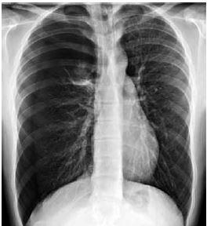
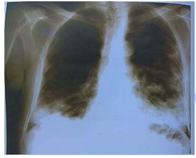
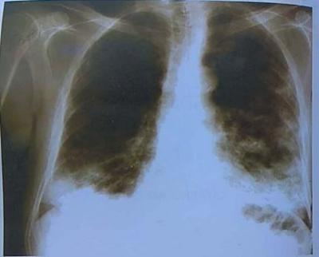
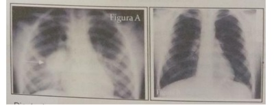
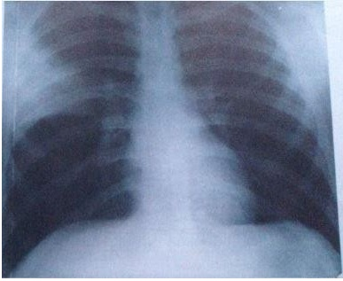
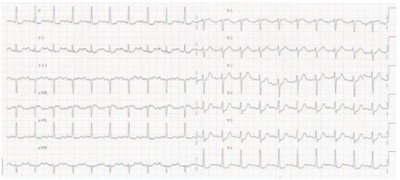

Questão 1 · Tratamento · Aplicação Clínica · 4000145863Um homem de 67 anos de idade, internado na enfermaria para tratamento de pneumonia comunitária, está no terceiro dia de ceftriaxone + claritromicina. Evoluiu com piora do padrão respiratório, sendo necessária a realização de IOT e a transferência para um leito de terapia intensiva. No terceiro dia de tratamento, após a ampliação de espectro de antibioticoterapia, o paciente evoluiu com piora dos parâmetros ventilatórios e realizou uma radiogra a de tórax, que demonstrou in ltrado bilateral e piora gasométrica. Realizou, também, uma USG point of care, que descartou disfunção miocárdica e sinais indiretos de hipervolemia. Está sob ventilação mecânica, em modo controlado, utilizando FiO2 40%. Coletou gasometria sem distúrbios acidobásicos, demonstrando PaO2 60 mmHg. Com base nessa situação hipotética, julgue os itens que se seguem. I. O diagnóstico é de síndrome do desconforto respiratório agudo (SDRA) grave. II. Tendo em vista o diagnóstico, deve-se instituir a ventilação protetora, que deve ser feita no modo ventilado à pressão controlada, obrigatoriamente. III. Visando à ventilação protetora, deve-se buscar um volume corrente de 10 – 12 mL/kg de peso do paciente. IV. Deve-se buscar a menor PEEP e a menor FiO2 para que o paciente mantenha a saturação adequada. A quantidade de itens certos é igual a
A 0.
B 1.
C 2.
D 3.
E 4.
Questão 2 · Pneumonia adquirida na comunidade PAC · 4000142748Qual o distúrbio hidroeletrolítico mais presente nos pacientes com pneumonia por
A Hipomagnesemia.
B Hiperfosfatemia.
C Hipercalemia.
D Hiponatremia.
E Hipocalcemia.
Questão 3 · Pneumonia · 4000142747Pneumonia é definida como um processo inflamatório agudo causado por agentes infecciosos. E, na atualidade, é importante definir a origem da pneumonia em relação ao paciente para melhor definir o agente etiológico e abordagem terapêutica. Assim, tem-se: pneumonia adquirida na comunidade (PAC), pneumonia nosocomial (PN) e pneumonia associada à ventilação mecânica (PAV). Das opções abaixo, qual contém a melhor definição de cada uma delas?
A PAC é a pneumonia que acomete o paciente fora do ambiente hospitalar ou se manifesta em até 48 horas após a admissão em unidade de cuidados médicos; PN é a pneumonia que acomete o paciente após 48 horas de internação, podendo ser subdividida em pneumonia adquirida no hospital e em PAV, ou seja, associada à ventilação mecânica.
B PAC é a pneumonia que acomete o paciente fora do ambiente hospitalar ou se manifesta em até 36 horas após a admissão em unidade de cuidados médicos; PN é a pneumonia que acomete o paciente após 48 horas de internação, podendo ser subdividida em pneumonia adquirida no hospital e em PAV, ou seja, associada à ventilação mecânica.
C PAC é a pneumonia que acomete o paciente fora do ambiente hospitalar ou se manifesta em até 72 horas após a admissão em unidade de cuidados médicos; PN é a pneumonia que acomete o paciente após 96 horas de internação, podendo ser subdividida em pneumonia adquirida no hospital e em PAV, ou seja, associada à ventilação mecânica.
D PAC é a pneumonia que acomete o paciente fora do ambiente hospitalar ou se manifesta em até 48 horas após a admissão em unidade de cuidados médicos; PN é a pneumonia que acomete o paciente após 72 horas de internação, podendo ser subdividida em pneumonia adquirida no hospital e em PAV, ou seja, associada à ventilação mecânica não invasiva.
E PAC é a pneumonia que acomete o paciente fora do ambiente hospitalar ou se manifesta em até 72 horas após a admissão em unidade de cuidados médicos; PN é a pneumonia que acomete o paciente após 72 horas de internação, podendo ser subdividida em Pneumonia adquirida no hospital e em PAV, ou seja, associada à ventilação mecânica não invasiva.
Questão 4 · Tratamento · 4000142746Mulher 70 anos de idade, sem antecedentes mórbidos, dá entrada no pronto-socorro com queixas de dor torácica à direita, tosse produtiva com secreção amarelada e febre há quatro dias. Exame físico: pressão arterial de 80 x 40 mmHg e taquipneia com FR de 28 irpm. Exames complementares: radiogra a torácica evidenciando opaci cação em lobo superior e médio do pulmão direito, função renal normal. Diante do caso, qual a conduta indicada?
A Usar os critérios do CURB-65 para classificar risco e local de internação, que no presente caso recebe um CURB- 65 de 4 e deve ser tratada em ambiente de terapia intensiva.
B Usar os critérios do CURB-65 para classificar risco e local de internação, que no presente caso recebe um CURB- 65 de 3 e deve ser internada para tratamento hospitalar e caso apresente confusão mental deve ser encaminhada à UTI.
C Usar os critérios do CURB-65 para classificar risco e local de internação, que no presente caso recebe um CURB- 65 de 4 e deve ser internada para tratamento hospitalar na UTI.
D Usar os critérios do CURB-65 para classificar risco e local de internação, que no presente caso recebe um CURB- 65 de 3 e deve ser internada para tratamento hospitalar e avaliar internação na UTI.
E Usar os critérios do CURB-65 para classificar risco e local de internação, que no presente caso recebe um CURB- 65 de 5 e deve ser internada para tratamento hospitalar, desde que no exame físico tenha confusão mental.
Questão 5 · Tratamento · 4000141005Paciente idoso, 78 anos, ex-tabagista, portador de hipertensão arterial, tosse produtiva com secreção amarela, queda do estado geral e dispneia. Chega à sala de emergência torporoso, frequência respiratória de 40 irpm, com uso de musculatura acessória, pulso fraco, com frequência cardíaca de 102 bpm. Na evolução do quadro, realizou a radiogra a de tórax a seguir. Diante da alteração encontrada, a conduta mais adequada é:

A drenagem de tórax em selo d’água.
B realização de trombólise com alteplase.
C associação de antifúngico endovenoso.
D administração de diurético endovenoso em altas doses.
E realização de passagem de cateter de diálise.
Questão 6 · Tratamento · 4000140635Homem de 55 anos, portador de insu ciência cardíaca crônica, de etiologia isquêmica, classe funcional NYHA II, comparece à consulta por apresentar quadro de febre moderada, anorexia, tosse produtiva com expectoração mucopurulenta e dor torácica à direita, há 3 dias. Os sinais vitais mostram: temperatura axilar de 37 ºC, frequência respiratória de 22 irpm, frequência cardíaca de 90 bpm e pressão arterial de 110 x 60 mmHg. No exame físico, por meio da ausculta, são detectadas crepitações finas em base do hemitórax direito. Nesse caso, o médico conclui que o paciente está com pneumonia, adquirida na comunidade, e, para tratá-la com o antibiótico adequado, deve prescrever
A amoxicilina.
B amoxicilina + azitromicina.
C azitromicina.
D amoxicilina + clavulanato.
Questão 7 · Agentes etiológicos · 4000129679O etilismo crônico, DPOC, idade avançada e permanência em UTI são fatores que, mais provavelmente, causam pneumonia por:
A estreptococos.
B estafilococos.
C klebsiella.
D actinobacter
Questão 8 · Tratamento · 4000114090Maria, 23 anos, estudante, vem à Unidade Básica de Saúde com queixa de tosse há 4 dias, expectoração amarelada, dor torácica ventilatória dependente no hemitórax direito e febre. Refere rinite alérgica sazonal e nega ter usado antibióticos nos últimos 2 anos. Apresenta-se consciente, orientada e eupneica, com frequência respiratória de 16 respirações por minuto e cardíaca de 82 bpm, temperatura corporal de 39ºC e PA igual a 110/70 mmHg. No radiograma do tórax apresentava consolidação segmentar no terço superior direito, hemograma com leucocitose e desvio à esquerda. A uréia não foi avaliada. Baseado no Escore CRB 65, qual seria o tratamento mais adequado para tratar a pneumonia dessa paciente?
A Internação e tratamento com quinolona de segunda geração, durante 7 a 10 dias.
B Tratamento ambulatorial com macrolídeo via oral, durante 7 dias.
C Internação e uso de beta-lactâmico IV, associado a macrolídeo.
D Internação e tratamento com beta-lactâmico por via oral, durante 7 dias. ida oib pr ed
Questão 9 · Mecanismos de resistência · Tratamento · 4000113951A duração ideal da antibioticoterapia no tratamento da PAC não está ainda definitivamente estabelecida, sendo a antibioticoterapia de curta duração ser a mais apropriada, uma vez que proporciona diversos benefícios, exceto:
A Menor exposição do paciente à ação de antibióticos.
B Reduz a ocorrência de efeitos adversos.
C Aumenta o desenvolvimento de resistência por parte dos microrganismos.
D Melhora a adesão dos pacientes e pode minimizar o tempo de internação e os custos financeiros.
Questão 10 · Agentes etiológicos · Pneumologia · 4000023736Uma paciente de 73 anos de idade, residente na cidade do Rio de Janeiro-RJ, é diabética e hipertensa. Negou história de tabagismo ativo ou passivo. Procurou atendimento de emergência por dispneia, tosse produtiva, febre de 39°C e dor torácica ventilatório-dependente. Ao exame físico, apresentava-se em regular estado geral, alerta, PA = 80 mmHg X 50 mmHg, FC = 115 bpm, SatO2 = 91% em ar ambiente, FR = 26 irpm; ausculta respiratória com crepitantes pulmonares à direita. Exames complementares: Hb = 13,3g/dL, Ht = 39%, leucócitos = 19.000/mm3 e 15% de bastões, 177 mil plaquetas, ureia = 108mg/dL, Cr = 1,6mg/dL, raio X de tórax com consolidação em lobo inferior direito. Quanto ao caso clínico apresentado e tendo em vista os conhecimentos médicos correlatos, julgue o item a seguir. O germe Mycoplasma pneumoniae é o segundo patógeno mais comumente isolado em casos como o citado.
A Certo.
B Errado.
Questão 12 · Quadro clínico · Tratamento · 4000011603Homem, 19 anos de idade, apresenta tosse com expectoração amarela, sem sangue, há 3 dias, acompanhada de dor torácica posterior direita e febre de 38,5C. Nega falta de ar, doenças associadas, tabagismo, etilismo ou viagens recentes. Exame físico: FR 16 irpm, Sat O₂ 97% ar ambiente, FC 95 bpm, PA 120x80 mmHg; estertores crepitantes nos na base posterior do pulmão direito; restante sem alterações. Radiogra a de tórax: consolidação segmentar em lobo inferior direito. Quais são o diagnóstico e a conduta mais adequados?
A Pneumonia adquirida na comunidade; tratamento em enfermaria (CURB-65 = 0); ceftriaxone e claritromicina; controle clínico em 48-72 horas e clínico e radiológico no final do tratamento.
B Pneumonia adquirida na comunidade; tratamento ambulatorial (CURB-65 = 0); macrolídeo ou betalactâmico, (amoxicilina ou amoxicilina + clavulanato); controle clínico em 48-72 horas e clínico e radiológico no final do tratamento.
C Pneumonia adquirida na comunidade; tratamento ambulatorial (CURB-65 = 3); quinolona respiratória; controle clínico em 48-72 horas e clínico e radiológico no final do tratamento.
D Pneumonia adquirida na comunidade; tratamento em enfermaria (CURB-65 = 2); ceftriaxone e claritromicina; controle clínico e radiológico 48-72 horas e clínico e radiológico no final do tratamento.
E Pneumonia adquirida na comunidade; tratamento em UTI (CURB-65 = 4); ceftriaxone e quinolona respiratória; controle clínico e radiológico 24 horas e clínico e radiológico no final do tratamento.
Questão 13 · Def inição · 4000006386A pneumonia nosocomial ou adquirida no hospital (PAH) é a segunda infecção hospitalar mais comum, com alta morbi- mortalidade. Quanto ao assunto, assinale a alternativa CORRETA:
A Febre, leucocitose e secreção purulenta são suficientes para o diagnóstico.
B A disseminação hematogênica e a translocação de bactérias do trato digestivo são as principais vias para seu desenvolvimento.
C A tomografia de tórax é imprescindível como exame complementar.
D É a pneumonia que ocorre, pelo menos após 48 horas de internação (em média 5 a 7 dias.
Questão 14 · Tratamento · 4000002732Na pneumonia comunitária, para que serve o escore CURB-65:
A Para avaliar comorbidades
B Para escolher classe de antibiótico
C Para estabelecer mortalidade e local de tratamento do paciente
D Para detectar potenciais doadores de órgãos
Questão 15 · Pneumonia adquirida na comunidade PAC · 4000001944A Tomogra a Computadorizada, a TC de tórax teve demonstrado recentemente que o emprego da TC aumenta a taxa de diagnósticos em pacientes com PAC e radiografia de tórax normal. Podemos assim concordar com o item:
A Pode não confirmar a doença em pacientes com radiografia com opacidades, o que não permitiria a descontinuação de antibióticos em uma proporção significativa de casos.
B Pode confirmar a doença em pacientes com radiografia com opacidades, o que permitiria a descontinuação de antibióticos em uma proporção significativa de casos.
C Pode não confirmar a doença em pacientes com radiografia com opacidades, o que permitiria a descontinuação de antibióticos em uma proporção insignificante de casos.
D Pode não confirmar a doença em pacientes com radiografia com opacidades, o que permitiria a descontinuação de antibióticos em uma proporção significativa de casos.
Questão 16 · Agentes etiológicos · 4000118855Paciente masculino, 70 anos, morador de rua, etilista, vem ao PS trazido pelo Samu devido a estado confusional. Exame físico: PA = 80 x 40 mmHg; FC = 130bpm; temperatura = 38°C; glicemia capilar = 200; FR = 30 irpm; SaO₂ = 90% em ar ambiente. Geral: MAU estado geral, anictérico, acianótico, febril, dentes em mal estado de conservação, hálito etílico. Glasgow: abertura ocular: abre os olhos ao chamado; resposta motora: retira o membro à dor; resposta verbal: fala confusa / sem sentido. Ausculta cardíaca sem alterações. Ausculta pulmonar com roncos bilaterais. Abdômen ácido, sem dor à palpação, sem outras alterações. Extremidades: edema +/4+ de MMII, tempo de enchimento capilar = 4s. Não há internações recentes. Inicialmente, o paciente foi conduzido à sala de emergência, e você está de plantão. Condutas iniciais foram tomadas, e exames complementares solicitados. Hb = 13,7; Ht = 40%; leucócitos = 20.700, 5% bastões, 70% segmentados, 25% linfócitos; plaquetas = 150.000; Cr = 2,0; Ureia = 60; Na = 143; K = 5,0. Gasometria: pH = 7,25; PaO₂ = 55; PaCO₂ = 30; bic = 15; SaO₂ = 90%; bilirrubinas totais = 1,0; amilase = 70; lipase = 30; gama-GT = 300; fosfatase alcalina = 100; PCR = 150; pró-calcitonina = 0,7. Raio-x tórax na sala de emergência. Pelas características do paciente, quais os patógenos mais prováveis devem estar presentes?

A Streptococcus pneumoniae, Haemophilus influenzae
B Anaeróbios,
C Streptococcus pneumoniae, Klebsiella spp
D Legionella pneumophila, Streptococcus pneumoniae, Pseudomonas aeruginosa
Questão 17 · Tratamento · 4000118845Paciente masculino, 70 anos, morador de rua, etilista, vem ao PS trazido pelo Samu devido a estado confusional. Exame físico: PA = 80 x 40 mmHg; FC = 130bpm; temperatura = 38°C; glicemia capilar = 200; FR = 30 irpm; SaO₂ = 90% em ar ambiente. Geral: MAU estado geral, anictérico, acianótico, febril, dentes em mal estado de conservação, hálito etílico. Glasgow: abertura ocular: abre os olhos ao chamado; resposta motora: retira o membro à dor; resposta verbal: fala confusa / sem sentido. Ausculta cardíaca sem alterações. Ausculta pulmonar com roncos bilaterais. Abdômen ácido, sem dor à palpação, sem outras alterações. Extremidades: edema +/4+ de MMII, tempo de enchimento capilar = 4s. Não há internações recentes. Inicialmente, o paciente foi conduzido à sala de emergência, e você está de plantão. Condutas iniciais foram tomadas, e exames complementares solicitados. Hb = 13,7; Ht = 40%; leucócitos = 20.700, 5% bastões, 70% segmentados, 25% linfócitos; plaquetas = 150.000; Cr = 2,0; Ureia = 60; Na = 143; K = 5,0. Gasometria: pH = 7,25; PaO₂ = 55; PaCO₂ = 30; bic = 15; SaO₂ = 90%; bilirrubinas totais = 1,0; amilase = 70; lipase = 30; gama-GT = 300; fosfatase alcalina = 100; PCR = 150; pró-calcitonina = 0,7. Raio-x tórax na sala de emergência. Assinale a alternativa que correlaciona melhor os escores abaixo com a apresentação clínica do paciente: Glasgow, curb-65, local de tratamento.

A 10,5, Unidade de Terapia Intensiva
B 11,4, internação hospitalar em enfermaria
C 11,5, Unidade de Terapia Intensiva
D 11,5, internação hospitalar em enfermaria
Questão 18 · Tratamento · 4000116507Um jovem de 26 anos, representante de medicamentos, com várias viagens ao mês, apresentou quadro de tosse com expectoração amarelada e febre, seguido por dispneia leve. Nega doenças prévias ou viagem para zona rural. Procurou serviço médico, com febre, porém com estado geral preservado. Rx Torax com in ltrado intersticial em lobo médio de pulmão direito. Para o tratamento de primeira linha para pneumonia comunitária, segundo sociedades europeia e americana de Pneumologia, temos:
A Moxifloxacino, 7 dias.
B Azitromicina, 5 – 7 dias.
C Levofloxacino, 7 dias.
D Piperaciclina-Tazobactam, 7 dias.
E Ceftriaxona, 7 dias.
Questão 19 · Tratamento · 4000113476Paciente, 60 anos, relata pneumonia diagnostica e tratada com antibiótico há 2 semanas (Figura A). No momento está assintomática, mas realizou Rx de controle demonstrado na Figura B. Diante desta situação, qual a abordagem deve ser realizada.

A Apenas observar, pois a imagem radiológica é residual, podendo desaparecer em algumas semanas.
B Reintroduzir o antibiótico para tratamento domiciliar, pois é recidiva de PAC.
C Trocar o antibiótico após a coleta de escarro para cultura e antibiograma, mantendo o tratamento domiciliar, pois pode-se tratar de infecção bacteriana resistente em idoso
D Introduzir novo antibiótico após a coleta de escarro para cultura e antibiograma, e indicar tratamento hospitalar.
E Nenhuma das anteriores
Questão 20 · Agentes etiológicos · 4000113127Qual das alternativas abaixo é correta em relação á etiologia das pneumonias bacterianas comunitárias (ordem de frequência), em pacientes portadores de DPOC:
A Pneumococo, Haemofilos, bactérias gram negativas
B Bactérias gram negativas, pneumococos, estafilococos
C Bactérias gram negativas, Haemofilos, pneumococo
D Estafilococos, pseudômonas, pneumococo
E Haemofilos, bactérias gram negativas, germes atípicos.
Questão 21 · Agentes etiológicos · Epidemiologia · 4000111624Paciente masculino, 20 anos, pedreiro, é atendido no PA, com história de febre há 3 (três) dias, tosse com expectoração purulenta e dor na base do hemitórax esquerdo há 2 (dois) dias. Trabalhou até o dia anterior e não se referia ser portador de doença crônica. Ao exame físico, apresentava-se ligeiramente toxemiado, com temperatura de 38° C, pulso de 108 bpm, frequência respiratória de 24 mpm, PA 130x50 mm Hg. O exame do tórax revelou estertores crepitantes e subcrepitantes em base pulmonar esquerda e em campo médio direito. RX do tórax mostrou in ltrado algodonoso peri-broncovascular em parte do lobo inferior esquerdo e em lobo médio. No leucograma, a contagem de leucócitos foi de 24.000/mm³. Assinale a correta
A A internação se justifica somente pela intensa leucocitose apresentada pelo paciente
B Dos germes atípicos, os mais frequentes causadores de pneumonia são o Mycoplasma pneumoniae e a Chlamidia pneumoniae
C Os germes atípicos não estão com frequência implicados na etiologia das pneumonias adquiridas na comunidade pois cerca de 35% delas se devem ao Streptococus pneumoniae.
D É mais provável que o Haemophilus influenza seja o agente etiológico do que o Streptococus pneumonia.
Questão 22 · Tratamento · 4000111230Paciente masculino, 20 anos, pedreiro, é atendido no PA, com história de febre há 3 (tres) dias, tosse com expectoração purulenta e dor na base do hemitórax esquerdo há 2 (dois) dias. Trabalhou até o dia anterior e não se referia ser portador de doença crônica. Ao exame físico, apresentava-se ligeiramente toxemiado, com temperatura de 38° C, pulso de 108 bpm, frequência respiratória de 24 mpm, PA 130x50 mm Hg. O exame do tórax revelou estertores crepitantes e subcrepitantes em base pulmonar esquerda e em campo médio direito. RX do tórax mostrou in ltrado algodonoso peri-broncovascular em parte do lobo inferior esquerdo e em lobo médio. No leucograma, a contagem de leucócitos foi de 24.000/mm³. Assinale a correta
A O diagnóstico é de pneumonia adquirida na comunidade clássica e o paciente pode ser tratado domiciliarmente.
B A ciprofloxaxina é uma boa alternativa de tratamento.
C O tratamento deve incluir um antibiótico com cobertura para germes atípicos.
D O RX mostra as alterações mais frequentemente encontradas na pneumonia por Streptococus pneumoniae.
Questão 23 · Pneumonia adquirida na comunidade PAC · 4000101364Paciente LH, 67 anos, sexo masculino, porteiro, não tabagista. Tratamento apenas de diabete melito com uso de metformina. Há 8 dias com quadro de tosse, expectoração amarelada e febre referida. Em uso N-acetilcisteina adquirida por conta própria, porém sem melhora. Há um dia com dispneia associada, procurando atendimento médico. Avaliado em REG, consiente e ansioso, taquipneico (FR = 28 irpm), taquicárdico (FC = 110 bpm), hipotenso ( PA = 80/50 mmHg). Ausculta torácica com bulhas rítmicas e normofonéticas e sem sopros cardíacos, presença de estertores nos em 1/3 inferior de hemotórax direito associado a presença de sopro tubário nesta localização. Na avaliação clínica inicial de pneumonia adquirida em comunidade – PAC, são alterações importantes para definição de tratamento (definição de antibioticoterapia e local de tratamento a ser indicado):
A Realização de hemograma completo e dosagem de ureia e transaminases séricas são essenciais
B Radiografia de tórax é essencial, sendo o padrão intersticial de pior prognóstico
C Solicitação de cultura de escarro deve ser realizada em todos os casos de pneumonias adquiridas em comunidade.
D Alterações no exame clinico (nível de consciência, taquipneia, hipotensão) e condições econômico sociais
Questão 24 · Tratamento · 4000097491Homem, 65a, dá entrada no pronto-socorro com distensão abdominal e parada de eliminação de fezes e atos, episódios de vômitos com aspecto fecaloide há 48 horas. Indicado procedimento cirúrgico com episódio de vômito durante a indução anestésica. No segundo dia pós-operatório apresentou febre alta contínua, presença de estertores subcrepitantes e roncos em ausculta respiratória e expectoração abundante e amarelada. Radiograma de tórax: opacidade homogênea em base de pulmão direito. A CONDUTA É:
A Amoxicilina-clavulanato.
B Ceftriaxona.
C Macrolídeo e vancomicina.
D Metronidazol e aminoglicosídeo.
Questão 25 · Pneumonia adquirida na comunidade PAC · 4000079335Em relação às pneumonias adquiridas na comunidade (PAC), analise as afirmativas abaixo. I - A resolução radiológica ocorre de maneira relativamente lenta, depois da recuperação clínica. II - A tomogra a computadorizada (TC) deve ser realizada o quanto antes, mesmo em pacientes jovens com in ltrado discreto, para a detecção de complicações, e na suspeita de embolia. III - A radiogra a de tórax deve ser repetida após seis semanas do início dos sintomas, em fumantes com mais de 50 anos e na persistência dos sintomas ou achados anormais no exame físico. IV - O padrão radiológico pode ser usado para predizer com segurança o agente causal.
A I e II.
B I e III.
C III e IV.
D II e IV.
Questão 26 · Bactérias grampositivas · Tratamento · Espectro de ação e indicações clínicas · 4000069859Idoso de 80 anos, internado em instituição de longa permanência há quatro dias, evolui com febre de 39°C, dor pleurítica e tosse produtiva com secreção amarelada. Nega tabagismo. Fez uso de amoxacilina por dois dias, sem apresentar nenhuma melhora. Foi colhida Gram, cujo resultado foi negativo; duas hemoculturas revelaram crescimento de cocos Gram-positivos em cacho de uva. O raio X de tórax mostrou um in ltrado no lobo pulmonar inferior direito, com pneumatocele. Nesse momento, o antibiótico mais apropriado para o tratamento e seu mecanismo de ação, respectivamente, são:
A Vancomicina/parede celular.
B Azitromicina/síntese proteica.
C Oxacilina/inibição da DNA girase.
D Sulfa + trimetropim/inibidor do ácido fólico.
Questão 27 · Cef alosporinas · Tratamento · 4000068684Uma mulher de 54 anos, com diagnóstico de hipertensão arterial sistemática adição à nicotina e diabete melito do tipo 2 está internada na enfermaria por motivo de dispneia e febre, recebendo a seguinte prescrição médica: - Dieta oral branda hipossódica e para diabete melito. - sinais vitais 4/4h. -Soro siológico 0,9% 250ml IV nas 24h. - Cefotaxima 1g IV 12/12h. - Enoxaprina 40mg/dia. Dipirona 1g IV até 4/4h SOS. - Glicemia capilar 6/6h e insulina regular. Conforme esquema (protocolo do hospital). Para qual das situações abaixo esta prescrição poderia corretamente ser usada?
A Pneumonia comunitária por Strepcoccus pneumoniae ou Haemophilus influenzae.
B Pneumonia comunitária por Streptococcus pneumoniae e Haemophilus influenzae ou Legionela pneumophila.
C Pneunomonia hospitalar por Staphylococcus aureus ou Pseudomonas aeruginosa.
D Pneumonia hospitalr por Staphylococcus aureus ou Pseudomonas aeruginosa ou Legionella pneumophila.
Questão 28 · Tratamento · 4000067711Homem, 70 anos, tabagista, está há 3 dias com febre e tosse produtiva. No exame físico, está sonolento, com roncos e estertores no pulmão direito, enchimento capilar de seis segundos, pressão arterial = 90 x 40 mmHg, FC - 110 bpm, FR = 34 irpm e oximetria = 85% em ar ambiente. Na história pregressa, houve três exacerbações no último ano, com internação em enfermaria há dois meses. Considerando o quadro apresentado, o esquema antibiótico mais apropriado é:
A levofloxacino.
B piperacilina-tazobactam + azitromicina.
C amoxacilina-clavulanato + claritromicina.
D meropenem + polimixina B.
E tigeciclina + vancomicina.
Questão 29 · Agentes etiológicos · Epidemiologia · Quadro clínico · 4000060688De acordo com as Diretrizes Brasileiras para Pneumonia Adquirida na Comunidade, atribua V (Verdadeiro) ou F (Falso) às afirmativas a seguir. ( ) A tomografia de tórax é o método de escolha na abordagem inicial, por sua ótima relação na detecção de gravidade, identificação de comprometimento multilobular e diagnóstico diferencial das etiologias alternativas. ( ) Na radiogra fia de tórax em incidência posteroanterior e em perfil, a classificação em padrões radiológicos, lobar, broncopneumonia e intersticial, é fundamental para a distinção entre os agentes infecciosos. ( ) Alterações radiológicas não devem ser indicativo de mudança no tratamento, desde que a melhora clínica esteja presente. A resolução completa pode levar até 6 semanas. Pacientes acima de 50 anos de idade tabagistas devem repetir a radiografia após esse período. ( ) A antibioticoterapia é, normalmente, iniciada de forma empírica, considerando os microrganismos mais prevalentes na população em questão. Um tratamento com duração menor que 10 dias em pacientes com doença moderada deve ser evitado pelo alto risco de indução à resistência. ( ) O pneumococo é um dos principais agentes relacionados à doença mais grave, por isso a importância da vacinação antipneumocócica. A vacina polissacarídea (Pneumo23) está recomendada para todos os pacientes acima de 65 anos de idade, bem como imunocomprometidos e moradores de instituições. Assinale a alternativa que contém, de cima para baixo, a sequência CORRETA.
A V, V, F, V, F.
B V, F, V, F, V.
C F, V, F, V, F.
D F, F, V, V, F.
E F, F, V, F, V.
Questão 30 · Agentes etiológicos · 4000054549Quais os agentes mais prováveis da pneumonia adquirida na comunidade em indivíduos imunocompetentes?
A Streptococcus pneumoniae, Mycoplasma pneumoniae, Chlamydia pneumoniae, Legionella sp.
B Streptococcus pneumoniae, Mycoplas mapneumoniae, Chlamydia pneumoniae, Staphilococcus aureus
C Streptococcus pneumoniae, Mycoplasma pneumoniae, Chlamydia pneumoniae, Haemophilus inluenzae.
D Streptococcus pneumoniae, Staphilococcus aureus, Mycoplasma pneumoniae, Pseudomonaeruginosa.
Questão 31 · Tratamento · 4000042804Paciente de 82 anos, diabético e com diagnóstico de Pneumonia. A função renal está preservada, PA 150 x 90 MMHg, FC 102 bpm, Temperatura Axilar 38 graus, FR 32 ipm. A melhor opção teraupêutica, nesse caso, é:
A Amoxacilina Clavulanato
B Claritromicina
C Ceftriaxona + Claritromicina
D Amoxacilina Clavulanato + Claritromicina
E Amoxacilina Clavulnato + claritromicina
Questão 32 · Bactérias gramnegativas · Pneumonia associada à ventilação PAV · 4000038310Espectro de ação e indicações clínicas Paciente internado na unidade de terapia intensiva há 38 dias, evoluindo com pneumonia associada à ventilação mecânica por Acinetobacter baumannii resistente aos carbapenêmicos. Qual é a opção adequada de terapia antimicrobiana?
A Imipenem
B Polimixina B
C Ceftriaxona + azitromicina
D Tigeciclina
Questão 33 · Tratamento · 4000034952Um paciente de 48 anos é admitido no pronto socorro com queixa de tosse produtiva e febre nos últimos 3 dias. Refere ser hipertenso em uso de Losartana 50 mg/dia e alérgico a betalactâmicos. Há cerca de 20 dias utilizou Azitromicina para tratamento de sinusite (sic). Ao exame físico: BEG, consciente, orientado, febril (38°C), ausculta cardíaca sem achados. FC: 89 bpm, PA: 120 × 80 mmHg e FR: 17 ipm, saturando 98% em ar ambiente. Não há quaisquer sinais de desconforto respiratório, porém há estertores em base pulmonar à direita. Não há outras alterações ao exame físico. Rx de tórax demonstra opacidade em base pulmonar a direita e broncogramas aéreos compatíveis com processo infeccioso atual. Assinale a alternativa que representa a melhor conduta para o caso descrito:
A Repetir o tratamento com macrolídeo pois o achado radiológico indica infecção por germes atípicos.
B Solicitar exames laboratoriais para adequada estratificação do risco posto a alteração radiológica evidente.
C Indicar tratamento ambulatorial com Levofloxacino oral e orientar retorno em caso de evolução desfavorável.
D Indicar antibioticoterapia endovenosa em regime de internação posto o uso recente de azitromicina.
Questão 34 · Agentes etiológicos · 4000027065H.J.M., 45 anos, procura atendimento médico referindo dor precordial, ventilatório dependente, tosse produtiva, dispneia e febre há 4 dias. Radiogra a de tórax evidencia in ltrado pulmonar e hemograma mostra uma leucocitose com desvio para a esquerda. Nega tabagismo e etilismo, sedentário. O agente etiológico mais provável desse caso é a(o):
A Staphylococcus aureus.
B Legionella spp.
C Chlamydia psittaci.
D Streptococcus pneumoniae.
Questão 35 · Tratamento · 4000025018Paciente do sexo masculino, de 70 anos, com diagnóstico prévio de diabetes e hipertensão arterial não controladas, em uso irregular das medicações. Residente em asilo. Iniciou há sete dias queda do estado geral, hiporexia, febre não aferida, dispneia. Exame físico: regular estado geral, consciente, orientado, hidratado, temperatura axilar 38,2 °C, frequência respiratória 32 IRPM, pressão arterial 120x80 mmHg, frequência cardíaca 125 BPM. Exames laboratoriais sem alterações. Conforme avaliação clínica e de acordo com os escores CURB 65 e PSI (pneumonia severity index), qual é o melhor tratamento para esse paciente?
A Observação no domicílio, sem medicamentos no momento.
B Antibioticoterapia domiciliar.
C Antibioticoterapia e internação em unidade de terapia intensiva.
D Antibioticoterapia e internação em enfermaria.
Questão 36 · Quadro clínico · Agentes etiológicos · 4000011146Determinado paciente de 28 anos de idade nega tabagismo, apresenta PA = 100 mmHg x 60 mmHg, FC = 92 bpm, FR = 21 ipm e SatO₂ = 94%, e tem manifestado, ao longo de quatro a seis semanas, perda de peso e anemia, apresentando também fadiga, tosse produtiva com escarro purulento, de odor pútrido, febre e pleurisia. A tomogra a de tórax revelou áreas de cavitação com níveis hidroaéreos, com regiões de desenvolvimento de abscessos. Acerca desse caso clínico, e considerando os conhecimentos médicos correlatos, assinale a alternativa correta.
A O tratamento do abscesso pulmonar, nesse caso, independentemente de continuidade da febre, pode ser feito com antibioticoterapia por 7 dias a 10 dias, por se tratar de pneumonia.
B Trata-se de um abscesso pulmonar agudo em paciente jovem previamente saudável, não sendo provável o envolvimento de
C É imunocomprometida pela história clínica; portanto, não há envolvimento de bacilos gram negativos como Klebisiella
D Nesse caso de abscesso pulmonar, não é uma opção de tratamento de escolha o uso de clindamicina.
E É um caso de abscesso pulmonar inespecífico e, em sua maioria, é causado por bactérias anaeróbias.
Questão 37 · Agentes etiológicos · 4000010617Um paciente fumante de 56 anos de idade, com histórico de hipertensão arterial e insu ciência cardíaca leve, vai ao serviço de emergência em razão de tosse produtiva, febre e dispneia ao repouso. O quadro clínico iniciou há uma semana com febre, dor muscular, dor abdominal difusa e diarreia sem muco, pus ou sangue com três dias de duração. Realizou raios X de tórax que evidenciam sinais de broncopneumonia em base pulmonar direita. Considerando esse caso clínico, assinale a alternativa que indica o microrganismo para qual se deve iniciar o tratamento antimicrobiano.
A Chlamydia pneumoniae.
B Legionella pneumophila.
C Mycoplasma pneumoniae.
D Aspergillus fumigatus.
E Candida albicans.
Questão 38 · Inf ectologia · Tratamento · 4000009653Mulher, 18 anos, nega alergia medicamentosa, nega comorbidades, nega uso recente de antibióticos. Veio ao ambulatório com queixa de astenia, tosse seca, febre e cefaleia. No exame físico, ausculta pulmonar apresentava estertores inspiratórios bilaterais no terço inferior dos pulmões. Temperatura 38°C e frequência respiratória de 24 incursões por minuto. Qual tratamento deveria ser indicado?
A Azitromicina por 10 dias.
B Claritromicina por 3 dias.
C Levofloxacino por 5-7 dias.
D Beta lactâmico associado a macrolídeo por 5-7 dias.
E Amoxicilina ou amoxicilina + ácido clavulânico por 7 dias.
Questão 39 · Abscesso pulmonar · 4000006061Assinale a alternativa INCORRETA com relação aos abscessos pulmonares.
A O abscesso pulmonar é uma coleção de pus localizada e causada pela destruição do parênquima pulmonar por substâncias proteolíticas produzidas por bactérias patogênicas ou infecção bacteriana secundária em cavidade pulmonar preexistente.
B O abscesso primário de pulmão ocorre como resultado de infecção bacteriana produtora de necrose no parênquima pulmonar de paciente previamente saudável.
C A aspiração da secreção orofaríngea infectada é a causa mais comum de abscesso pulmonar secundário.
D A infecção secundária por cavidade pulmonar preexistente e a necrose por neoplasia, pós-infarto ou tuberculose pulmonar também são definidas como abscessos.
Questão 40 · Agentes etiológicos · Tratamento · 4000003433Paciente de 67 anos, sexo masculino, ex-tabagista, sedentário e hipertenso controlado, apresenta há 5 dias quadro de tosse com expectoração amarelada, acompanhado de febre diária de 38,3 °C. Há 1 dia evoluiu para piora progressiva do quadro passando a apresentar di culdade para respirar, motivo que levou seus familiares a trazê-lo ao HU-UFSCar para avaliação. Na entrada apresentava-se agitado, confuso, com frequência cardíaca = 104 bpm, frequência respiratória = 28 irpm sem uso de musculatura acessória, sinal de Hoover negativo, temperatura axilar = 38,7 °C, pressão arterial = 94 x 62 mmHg. Foram realizados exames complementares para avaliação e prescrito antibioticoterapia empírica. Diante do quadro apresentado, o provável agente etiológico e o tratamento empírico mais adequado, respectivamente, são:
A Pneumocystis jiroveci; Meropenem associado a Claritromicina.
B Streptococcus agalactiae, Daptomicina associado a Claritromicina.
C Enterococcus faecium; Amoxicilina associado a Claritromicina.
D Staphylococcus aureus; Vancomicina associado a Claritromicina.
E Streptococcus pneumoniae; Ceftriaxone associado a Claritromicina.
Questão 41 · Pneumonia adquirida na comunidade PAC · 4000128269Qual alternativa está ERRADA em relação à pneumonia por Mycoplasma pneumoniae?
A É causa infecciosa frequente da síndrome torácica aguda em pacientes com anemia falciforme
B É comum a infecção entre irmãos que moram juntos
C Em adolescentes é a etiologia mais frequente de pneumonia
D Os achados radiográficos são inespecíficos, sendo os lobos inferiores os mais comumente envolvidos
Questão 42 · Tratamento · 4000127494Um paciente de 48 anos é admitido no pronto socorro com queixa de tosse produtiva e febre nos últimos 3 dias. Refere ser hipertenso em uso de Losartana 50 mg/dia e alérgico a betalactâmicos. Há cerca de 20 dias utilizou Azitromicina para tratamento de sinusite (sic). Ao exame físico: BEG, consciente, orientado, febril (38 °C), ausculta cardíaca sem achados. FC: 89 bpm, PA: 120 × 80 mmHg e FR: 17 ipm, saturando 98% em ar ambiente. Não há quaisquer sinais de desconforto respiratório porém há estertores em base pulmonar à direita. Não há outras alterações ao exame físico. Rx de tórax demonstra opacidade em base pulmonar a direita e broncogramas aéreos compatíveis com processo infeccioso atual. Qual a melhor conduta para este caso?
A Repetir o tratamento com macrolídeo pois o achado radiológico indica infecção por germes atípicos.
B Indicar tratamento ambulatorial com Levofloxacino oral e orientar retorno em caso de evolução desfavorável.
C Solicitar exames laboratoriais para adequada estratificação do risco posto a alteração radiológica evidente.
D Indicar tratamento ambulatorial com Levofloxacino com retorno obrigatório em 48horas para repetir radiografia.
E Indicar antibioticoterapia endovenosa em regime de internação posto o uso recente deazitromicina.
Questão 43 · Pneumonia bacteriana · 4000125360Homem, 28 anos, apresenta queixas de febre (38,9°C), tosse produtiva e dispneia de início há 3 dias. É soropositivo para HIV e há 45 dias a sua contagem de CD4 foi de 600 cels/microL. A radiogra a de tórax revela a presença de um in ltrado interstício-alveolar em região de lobo inferior direito. Qual o diagnóstico mais provável?
A Pneumonia por Pneumocystis jiroveci.
B Pneumonite aspirativa.
C Histoplasmose pulmonar.
D Pneumonia por citomegalovírus.
E Pneumonia bacteriana.
Questão 44 · Tratamento · 4000121724Paciente D.P.O.C., 75 anos, é admitido em PS com tosse, febre e expectoração purulenta há 5 dias. Nota-se, ao exame físico taquipneia (FR: 32 irpm) FC = 100 bpm; PA = 100 x 50 mmHg. O RX de tórax demonstra consolidação em base de hemitórax direito. Nesse caso, a melhor conduta é o tratamento.
A Ambulatorial com azitromicina.
B Hospitalar com azitromicina.
C Ambulatorial com ampicilina sulbactam + azitromicina.
D Hospitalar com ampicilina sulbactam + azitromicina.
E Hospitalar com meropenem.
Questão 45 · Agentes etiológicos · 4000120533Homem, 68 anos, diabético e hipertenso, queixa-se de tosse com expectoração amarelada e febre de até 38 graus há 4 dias. Faz uso de anlodipino, metformina e glimepirida e não teve internação hospitalar recente. O exame físico revela o paciente em regular estado geral, consciente e orientado, taquipneico (FR = 34 ipm), com pressão arterial de 90 x 50 mmHg, e taquicárdico (FC = 112 bpm). A radiogra a de tórax evidenciou consolidação com broncograma aéreo em base do pulmão esquerdo. O agente etiológico mais provável e prevalente, responsável pelo quadro descrito, é:
A O Staphylococcus aureus.
B O Streptococcus pneumoniae.
C A Legionella sp.
D O Haemophilus influenzae.
E O Mycobacterium tuberculosis.
Questão 46 · Agentes etiológicos · Bactérias atípicas · 4000114500Qual dos agentes etiológicos de pneumonia tem relação com sistemas de ar condicionado?
A Klebsiella.
B Chlamydia.
C Mycoplasma.
D Legionella.
Questão 47 · Pneumonia adquirida na comunidade PAC · 4000112924Qual dos fatores abaixo NÃO é considerado correto fator de risco para pneumonia aspirativa:
A Idade maior que 75 anos
B Diabetes mellitus
C Alcoolismo
D Doenças esofágicas
Questão 48 · Agentes etiológicos · Tratamento · 4000110605Com relação ao tratamento das pneumonias correlacione o agente etiológico com o antibiótico mais adequado para o tratamento A- Streptococcus do grupo B ( ) ; B- Chlamydia trachomatis ( ) ; C- Staphylococcus aureus ( ) ; D- Moraxella catarrhalis ( ); 1- Ampicilina; 2- Amoxacilina com clavulanato; 3- Oxacilina; 4- Azitromicina, clindamicina
A 3-2-1-4
B 1-4-2-3
C 1-4-3-2
D 1-2-3-4
Questão 49 · Tratamento · 4000109675Paulo, 20 anos, estudante, hígido previamente e que não usou antibióticos há pelo menos um ano, apresenta-se com tosse há quatro dias, expectoração amarelada, dor torácica ventilatória dependente no hemitórax direito e febre. Apresenta-se consciente, orientado, eupneico. Dados vitais: frequência respiratória=16rpm, frequência cardíaca=82bpm, temperatura de 39°C, Pressão arterial=110x70mHg. No radiograma do tórax apresentava consolidação segmentar no terço superior do pulmão direito, Hemograma com leucocitose e desvio à esquerda, creatinina de 0,8mg/dL. Baseado no diagnóstico de pneumonia, o tratamento mais adequado é:
A Internação e quinolona de segunda geração durante dez dias.
B Tratamento ambulatorial com macrolídeo, durante 10 dias.
C Internação e beta-lactâmico endovenoso associado a macrolídeo.
D Internação e beta-lactâmico por via oral, durante 10 dias Comentário por Sérgio Beduschi Filho – infectologia (Pneumonia / Pneumonia adquirida na comunidade).
Questão 50 · Tratamento · 4000108322Mulher, 38 anos, previamente hígida e sem uso regular de medicação, refere quadro gripal há uma semana, com coriza e tosse seca, sem febre. Refere que, nos últimos dois dias, a tosse se tornou produtiva, com expectoração amarelada. Não há queda do estado geral, a paciente encontra-se eupneica em ar ambiente e, no momento da consulta, apresenta temperatura axilar de 38,5 °C. A ausculta pulmonar revela estertores subcrepitantes na base do pulmão esquerdo e alguns roncos esparsos. Os demais sinais vitais estão estáveis: PA 112x78 mmHg, FC = 90 bpm, SpO₂ = 96%. O hemograma mostrou discreta leucocitose com neutro lia. Os demais exames laboratoriais são normais. Admitindo-se que a paciente é atendida em uma unidade básica de saúde e, portanto, sem a disponibilidade de exames complementares, assinale a alternativa que apresenta a conduta correta.
A Internar a paciente em unidade de terapia intensiva e iniciar piperaclina / tazobactam.
B Internar a paciente em enfermaria e iniciar tratamento com moxifloxacina EV.
C Prescrever cefuroxima, sintomáticos e fazer acompanhamento ambulatorial.
D Medicar com sintomáticos e prescrever oseltamivir por 5 dias.
E Prescrever claritromicina, sintomáticos e fazer acompanhamento ambulatorial.
Questão 51 · Pneumonia adquirida na comunidade PAC · 4000104173Paciente com deterioração infecciosa na noite anterior foi transferido para sala de emergência, durante a visita do Médico foi solicitada sua opinião quanto às condutas a seguir, a única alternativa adequada, nesse caso é:
A A hemocultura deve ser reservada para a PAC grave e no caso de pacientes internados não-respondedores à terapêutica instituída, pois normalmente apresenta baixo rendimento.
B A hemocultura deve ser reservada para a PAC grave e no caso de pacientes internados não-respondedores à terapêutica instituída, pois normalmente apresenta alto rendimento.
C Resultados de hemocultura falso-negativos são raros, mesmo se houve uso prévio de antibióticos, e raramente resultam em mudança de conduta.
D As amostras devem ser coletadas depois do início, ou da modificação, do tratamento e não devem retardar a administração da primeira dose de antibiótico.
Questão 52 · Tratamento · 4000099592Paciente de 58 anos, sexo feminino, doméstica, não tabagista. Tratamento apenas de HAS, com segmento regular em UBS, e em uso apenas de hidroclorotiazida. Há 7 dias com quadro de tosse, expectoração amarelada e febre referida. Em uso de ambroxol xarope adquirido por conta própria, porém sem melhora. Há um dia com dispneia associada, procurou atendimento médico. Avaliada em MEG, confusa, taquipneica (FR = 34 irpm), taquicárdica (FC = 120 bpm), hipotensa ( PA = 80/50 mmHg). Ausculta torácica com bulhas rítmicas e normofonéticas e sem sopros cardíacos, presença de estertores nos em 1/3 inferior de hemotórax direito associado a presença de sopro tubário nesta localização. Na avaliação clínica de pneumonia adquirida em comunidade – PAC, são alterações importantes para definição de tratamento (definição de antibioticoterapia e local de tratamento a ser indicado):
A Confusão mental, FR > 30 irpm, Hipotensão arterial (PAS <90/PAD < 60 mmHg)
B Idade superior a 55 anos, FR > 30 irpm, Hipotensão arterial (PAS < 90 mmHg)
C Confusão mental, comorbidade (HAS), taquicardia ( FC > 115 bpm)
D Além de quadro confusional, taquicardia e taquipneia, a dosagem de ureia no soro é essencial para definição de terapêutica.
Questão 53 · Tratamento · 4000098365Qual dos critérios abaixo NÃO faz parte do CURB-65 para diagnóstico de pneumonia?
A Frequência respiratória.
B Pressão arterial.
C Confusão mental.
D Frequência cardíaca.
Questão 54 · Agentes etiológicos · 4000083679Paciente idoso procedente da sua casa e previamente hígido, consulta por febre, início abrupto de tosse, dispneia e produção de escarro, dor torácica ventilatório-dependente, calafrios, mialgias, confusão, mal-estar, taquipneia, taquicardia, estertores crepitantes ao exame do tórax, maciez à percussão de área do tórax em área correspondente à consolidação lobar, que aparece na radiogra a de tórax. O hemograma demonstra 16.000 leucócitos. Qual o agente etiológico mais provável?
A Klebsiella pneumoniae.
B Streptococcus pneumoniae.
C Pseudomonas aeruginosa.
D Staphylococcus aureus.
Questão 55 · Agentes etiológicos · Bactérias gramnegativas · 4000081728Paciente portador de mucoviscidose é internado na UTI devido a uma pneumonia adquirida na comunidade. Qual é o patógeno mais provável?
A Pseudomonas aeruginosa.
B Moraxella catarrhalis.
C Legionella pneumophila.
D Streptococcus pneumoniae.
E Staphylococcus aureus.
Questão 56 · Tratamento · 4000081438Na pneumonia adquirida na comunidade, está indicado tratamento ambulatorial para:
A Maiores de 65 anos, com frequência respiratória maior que 25ipm, taquicardia e confusão mental.
B Maiores de 65 anos, com frequência respiratória menor que 25ipm, instabilidade hemodinâmica e confusão mental.
C Maiores de 65 anos, com frequência respiratória menor que 25ipm, estabilidade hemodinâmica e ausência de confusão mental.
D Menores de 65 anos, com frequência respiratória maior que 25ipm, pressão sistólica menor que 90mmHg e confusão mental.
Questão 57 · Agentes etiológicos · 4000075914A causa mais comum de pneumonia lobar em paciente com Aids é:
A M. tuberculosis.
B S. pneumoniae.
C Histoplasma capsulatum.
D P. jirovecii.
E Klebsiella pneumonaie.
Questão 58 · Espectro de ação e indicações clínicas · Tratamento · 4000070768Paciente de 72 anos, portador de DM tipo II e HAS controlada com 3 medicações diferentes, procura ambulatório com tosse seca, febre de 37° C há 3 dias, dor precordial e dispnéia moderada, mesmo em repouso. Ausculta pulmonar com estertores em parte anterior de HTE. Fez uso de Amoxacilina há 2 meses por 14 dias para sinusite. Diante da hipótese diagnóstica, qual o antibiótico de escolha?
A Azitromicina
B Amoxacilina
C Levofloxacino
D Eritromicina
Questão 59 · Tratamento · 4000066077Homem, 75 anos, com demência avançada e DPOC, é trazido à emergência hospitalar por estar sonolento e com tosse produtiva. Acompanhantes não observaram febre, mas disseram que a urina está fétida e concentrada. Há 45 dias, realizou tratamento de infecção respiratória com levo oxacino. Ao exame físico, o paciente está torporoso, o enchimento capilar é de 5 segundos; PA = 90 x 60 mmHg; FC = 110 bpm e FR = 28 irpm; e oximetria de 78%. Dentre as opções abaixo, o esquema antimicrobiano mais apropriado para o quadro é:
A Meropenem.
B Amoxicilina + clavulanato com claritromicina.
C Doxiciclina com amoxicilina.
D Piperacilina + tazobactam com azitromicina.
E vancomicina com ceftarolina.
Questão 60 · Agentes etiológicos · 4000061293Homem alcoólatra, 52 anos de idade, apresenta-se à emergência local com tosse produtiva e purulenta, dispneia, dor torácica no lado direito e febre. Ele relata que seus sintomas iniciaram há alguns dias. Ao exame, apresenta temperatura de 38,8° C, frequência cardíaca de 96 bpm, frequência respiratória de 22 irpm, saturação de oxigênio de 85% em ar ambiente e pressão arterial de 115/92mmHg. Apresenta dentição precária e hálito fétido. Há dor à percurssão sobre o campo pulmonar inferior direito e estertores são auscultados bilateralmente. A radiogra a torácica demonstra opacidade no lado direito, na porção superior do lobo inferior direito, com presença de nível hidroaéreo e consolidação do parênquima do lado direito também. Com base nesta apresentação, qual das opções a seguir constitui o organismo etiológico mais provável?
A Candida glabrata;
B Vírus influenza;
C Mycobacterium tuberculosis;
D Peptostreptococcus;
E Streptococcus pneumoniae;
Questão 61 · Tratamento · 4000055022Uma gestante apresentou febre, tosse produtiva e prostração há 2 dias. Ao ser avaliada na UPA 24 horas, foi diagnosticada com pneumonia comunitária. O tratamento medicamentoso deve ser feito preferencialmente com:
A azitromicina
B levofloxacina
C penicilina G benzatina
D sulfametoxazol+trimetoprima
E tetraciclina
Questão 62 · Tratamento · 4000047369Em relação ao tratamento das pneumonias, assinale a alternativa CORRETA.
A O tratamento empírico deve ser evitado na maioria dos casos, objetivando-se diminuir a seleção de germes resistentes, principalmente no ambiente hospitalar.
B Todo paciente com FR (Frequência Respiratória) > 30 IPM (Inspirações por Minuto) deve ser hospitalizado em ambiente de UTI pelo alto risco de complicações, de acordo com o escore de CURB-65.
C Uso de antibiótico nos últimos 3 meses é fator de risco para pneumonia por germe resistente.
D A falha terapêutica da antibioticoterapia é considerada após 24 horas de seu início, na ausência de melhora do quadro clínico do paciente.
E A tomografia de pulmão é o melhor método para determinação de consolidações pulmonares e deve ser sempre considerada no manejo das pneumonias.
Questão 63 · Agentes etiológicos · 4000047340As pneumonias são infecções pulmonares extremamente comuns. A classificação clássica (pneumonias comunitárias, hospitalares e associadas à ventilação mecânica) considera os agentes etiológicos como sua principal diferença. Entretanto, nos dias atuais, essa divisão vem sendo comprometida pela quantidade cada vez maior de germes resistentes ao antibióticos, geralmente usados para as pneumonias comunitárias. Diante desse relato, assinale a afirmativa CORRETA.
A Streptococcus pneumonie e Klebsiela pneumonie são considerados agentes etiológicos típicos das pneumonias.
B Agentes atípicos como Haemophylos influenzae, Chlamydia pneumoniae e Mycoplasma pneumoniae estão entre os agentes etiológicos mais comuns.
C Os vírus são agentes etiológicos incomuns e o uso de antivirais são obrigatórios em quase todos os casos.
D A melhor forma de detectar e definir os agentes etiológicos associados as pneumonias é a bacterioscopia pelo GRAM com cultura da amostra do escarro, principalmente nos germes atípicos.
E Não é comum a associação de pneumonia por Staphylococcus aureus e o vírus influenza, sendo aquele agente etiológico descartado na determinação da terapia empírica de pneumonia secundária a Gripe.
Questão 64 · Agentes etiológicos · Inf ectologia · 4000010681Uma paciente de 88 anos de idade, em uso de 10 mg ao dia de prednisona devido à asma e bronquiectasia, está utilizando antibioticoterapia de largo espectro, há mais de dez dias, por apresentar infecção do trato urinário (ITU). Encontra-se com quadro de queda do estado geral, confusão mental, desnutrição, leve taquipneia, ausculta respiratória com roncos em base e ausência de febre. Com base nessa situação hipotética, o diagnóstico provável da paciente será
A ITU por Escherichia coli resistente.
B ITU por Proteus ou klebsiella resistente.
C pneumonia por Pseudomonas aeruginosa.
D pneumonia por pneumococo.
E asma persistente e demência mista.
Questão 65 · Tratamento · 4000005488Homem, 56 anos de idade, hipertenso, chega ao pronto-socorro com quadro de tosse com expectoração amarelada, dispneia e febre há três dias. Nas últimas três horas vem se apresentando sonolento. Sinais vitais: PA = 80 x 30 mmHg; FC = 130 bpm; TEC = 4 seg; saturação O₂ = 90%; FR = 30 irpm; Glasgow = 13; temperatura axilar = 38°C; peso corporal = 80 kg. Qual a antibioticoterapia de escolha, sabendo que o paciente não tem história de internação hospitalar?
A Meropenem + vancomicina.
B Ceftriaxona + claritromicina.
C Piperacilina + tazobactam.
D Cefepima + vancomicina.
E Ciprofloxacino + oxacilina.
Questão 66 · Tratamento · 4000119072Paciente do sexo feminino, 76 anos, ex-tabagista, é portadora de hipertensão arterial sistêmica controlada com medicamentos. Refere que há 12 dias apresentou quadro gripal, permanecendo mais cansada desde então. Há três dias apresenta tosse produtiva, com expectoração amarelo-esverdeada, piora do estado geral e febre de 38,5°C. O exame físico da admissão mostra: paciente prostrada; taquipneica com FR = 32 irpm; dessaturação leve em ar ambiente; PA = 80 x 40 mmHg; FC = pulso = 100 bpm. A ausculta pulmonar revela estertores subcrepitantes em terço inferior do hemitórax direito, sibilos expiratórios difusos e roncos. Assinale a alternativa que contém a conduta CORRETA em relação a essa paciente:
A Transferência para a UTI e início precoce de antibioticoterapia com ceftriaxona e azitromicina.
B Transferência para a UTI e início precoce de antibioticoterapia com ampicilina e amicacina.
C Internação em unidade de internação tipo enfermaria e tratamento com levofloxacina.
D Internação em unidade de internação tipo enfermaria e tratamento com claritromicina.
E Encaminhamento para acompanhamento em unidade básica de saúde e tratamento com amoxicilina.
Questão 67 · Quadro clínico · Tratamento · 4000118425Homem, 76 anos, procurou atendimento no serviço de urgência devido a quadro de astenia, inapetência, tosse com catarro amarelado há 3 dias, após ter tido previamente um resfriado que durou 6 dias, segundo acompanhantes. Durante esse período, apresentou episódios de desorientação associados a de cit de atenção associado à alteração do ciclo sono- vigília. Tem antecedentes de diabetes mellitus tipo 2, em uso de metformina 500 mg/dia. Ao exame: edêntulo, taquipneico (FR: 30 inc/min.), corado, hidratado, desorientado no tempo e no espaço, com de cit de atenção. No exame: AR: MV diminuído em base de HTE, com presença de EC; oxímetria de pulso apresenta SapO2 90%; AC: RCR 2T sem sopros; FC: 90 bpm; PA: 90X55 mmHg; abdome: sem anormalidades. Extremidades: sem edema e sem cianose. Radiogra a de tórax com hipotransparência não homogênea em base de HTE. Em relação ao quadro apresentado, é CORRETO afirmar:
A Trata-se de uma pneumonia comunitária. O tratamento pode ser feito ambulatorialmente, com uso de beta- lactâmicos e macrolídeos.
B Trata-se de Delirium devido à infecção respiratória. Pode ser tratado com haloperidol e macrolídeo, em ambiente domiciliar.
C Trata-se de uma pneumonia comunitária. No entanto, devido ao quadro de Delirum, associação de doença prévia e CURB-65 com score de 3, deve-se considerar internação hospitalar e/ou em unidade de terapia intensiva
D Trata-se de Delirium devido à infecção respiratória. Pode ser tratado com uso de haloperidol e beta-lactâmicos, em ambiente hospitalar de curta duração.
E Trata-se de uma pneumonia comunitária, com CURB-65 com score de 2. Pode ser tratada com uso de fluroquinolonas, em ambiente hospitalar.
Questão 68 · Agentes etiológicos · 4000114475Qual a complicação hematológica mais comum nos pacientes com quadro de pneumonia por micoplasma?
A Distúrbios da coagulação.
B Trombocitopenia.
C Neutropenia grave.
D Anemia hemolítica.
E Hiperleucocitose.
Questão 69 · Tratamento · 4000113541Qual dos marcadores abaixo é o que tem melhor evidencia da literatura para o início de antibioticoterapia num paciente com pneumonia hospitalar?
A PCR.
B S-TREM sanguíneo.
C Procalcitonina.
D VHS.
Questão 70 · Tratamento · 4000112300Qual é o tempo habitual do tratamento de uma PAVM (Pneumonia Associada à Ventilação Mecânica)?
A 5 dias.
B 7 dias.
C 10 dias.
D 14 dias.
Questão 71 · Tratamento · 4000107205Sobre o tratamento antimicrobiano das pneumonias adquiridas na comunidade (PAC), assinale a alternativa incorreta:
A Para paciente previamente hígidos e sem uso de antimicrobianos nos últimos três meses azitromicina oral é uma indicação
B Em pacientes internados, o uso empírico da azitromicina como monoterapia fica restrito aos pacientes portadores de PAC não-grave
C Para paciente previamente hígidos e sem uso de antimicrobianos nos últimos três meses monoterapia com amoxacilina não é uma opção indicada.
D Em pacientes internados, com PAC não-grave levofloxacina é uma indicação.
Questão 72 · Def inição · 4000096106Um dos fatores de risco para o desenvolvimento de pneumonia associada à ventilação mecânica (PAV) é:
A uso crônico de antiagregante plaquetário
B albumina sérica "menor ou igual" 3,2 g/dL
C idade superior a 50 anos
D transfusão sanguínea
Questão 73 · Tratamento · 4000086506Em que momento um paciente que foi internado para o tratamento de pneumonia bacteriana sem complicações deve ser reavaliado com raio X de tórax?
A 2 dias antes da alta hospitalar.
B No dia da alta hospitalar.
C Em 1-2 semanas após a alta hospitalar.
D Em 2-3 semanas após a alta hospitalar.
E Em 4-6 semanas após a alta hospitalar.
Questão 74 · Agentes etiológicos · 4000081072Mulher de 42 anos de idade, sem comorbidades conhecidas, sem história de internação hospitalar prévia, procura atendimento médico com queixa de dispneia, tosse com expectoração, dor torácica ventilatório-dependente e febre baixa, há 2 dias. Ao exame físico, encontra-se em regular estado geral, taquipneica, com FR = 30 irpm e mucosas desidratadas ++/++++. Na ausculta pulmonar, estertores crepitantes em base de pulmão direito. A principal hipótese diagnóstica é pneumonia adquirida na comunidade. Os prováveis agentes etiológicos implicados são:
A Bacilos Gram-negativos.
B Legionella sp.
C S. aureus.
D P. aeruginosa.
E S. pneumoniae.
Questão 75 · Tratamento · 4000069731Mulher de 67 anos de idade, atendida na emergência do hospital com queixa de febre de 38,5°C há 3 dias associada a dor tipo pleurítica e, nas últimas 12 horas, dispneia a moderados esforços. Ao exame físico apresenta-se lúcida e orientada, corada, acianótica, taquipneica, sem esforço respiratório evidente. Sinais vitais: FC 104 bpm, PA 100/50 mmHg, Tax 38,2°C, FR 32 irpm. Ausculta respiratória com presença de estertores crepitantes localizados no terço médio do pulmão direito. Exames complementares: Hemoglobina 14 g/dl, Hematócrito 40%, Leucóticos 14.000/mm3, Plaquetas 250.000/mm3, ureia 80 mg/dl, creatinina 2.4 mg/dl. Radiogra a de tórax evidencia imagem de consolidação com broncograma aéreo no lobo médio. Considerando a principal hipótese diagnóstica do caso acima, qual seria o local de tratamento mais indicado e o regime terapêutico?
A Tratamento ambulatorial / Amoxicilina via oral
B Internação hospitalar / Ceftriaxone + azitromicina intravenosos
C Tratamento ambulatorial / Levofloxacina via oral
D Internação hospitalar / Piperaciclina + tazobactam intravenosos
Questão 76 · Espectro de ação e indicações clínicas · Tratamento · 4000069728Um paciente de 20 anos é internado na UTI devido a quadro de brose cística, para tratamento de infecção respiratória grave. Considerando as principais bactérias que colonizam as vias aéreas dos portadores de brose cística, das opções abaixo, escolha o melhor fármaco para tratamento empírico:
A amoxicilina + sulbactam + clindamicina.
B levofloxacino + claritromicina.
C levofloxacino.
D ertapenem.
Questão 77 · Tratamento · 4000061515No concernente ao tratamento antibiótico empírico para pneumonias comunitárias no paciente hospitalizado na enfermaria, qual é o medicamento de primeira indicação?
A Amoxicilina.
B Ciprofloxacino.
C Fluoroquinolona.
D Claritromicina.
E Vancomicina.
Questão 78 · Agentes etiológicos · 4000061457Entre causas de Pneumonia Adquiridas na Comunidade (PAC), podemos afirmar que:
A Infecções por Legionella são mais frequentes em pacientes com relato de exposição a pássaros e o quadro pulmonar encontra-se associado a manifestações gastrointestinais, renais, hipopotassemia e hiponatremia.
B A pneumonia por Haemophilus influenzae começa, geralmente, depois de uma infecção viral do trato respiratório superior, seguida de febre, tosse produtiva, dispneia, dor pleurítica, tendo como característica do escarro o aspecto ferruginoso.
C A pneumonia por influenza A (H1N1) é considerada de menor gravidade, com febre, cefaleia, tosse, dor de garganta, mialgia, espirros, fraqueza e hiporexia, com resolução em torno de 5 dias.
D Dentre os patógenos identificados recentemente como agentes etiológicos potenciais de PAC estão os hantavírus, os metapneumovírus e os coronavírus, que podem causar síndrome respiratória grave.
Questão 79 · Tratamento · 4000044118Paciente idoso (66 anos), cardiopata grave, diabético e com antecedentes de acidente vascular cerebral isquêmico há 05 meses e com hemiparesia a direita e di culdade de deglutição e fala arrastada. Vem evoluindo com quadro de sonolência, hiporexia, tosse seca e esporadicamente hipertemia. Familiares perceberam que nos últimos dias o paciente vem apresentando tosse durante a alimentação. Na asculta foi observado estertores creptantes em base do pulmão direito e que confirmou na radiogra a de tórax com a presença de in ltrado. O melhor local para tratamento deste paciente e o melhor esquema de antibiótico é:
A domicilio e amoxacilina/ clavulanato + azitromicina
B domicilio e amoxacilina/ clavulanato + clindamicina
C hospital e ceftriaxona + claritromicina
D hospital e ceftriaxona + clindamicina
E hospital e imipenem + vancomicina
Questão 80 · Tratamento · 4000038045Paciente J.J.J., 58 anos, internado no pronto-socorro há dez dias devido a acidente vascular encefálico, sem necessidade de transferência para unidade de terapia intensiva. Apresenta há dois dias febre, tosse com expectoração amarelada, prostração e hiporexia. Ao exame físico, PA: 120 x 60 mmHg; FC: 110 bpm; FR: 28 IRM; T: 38°C. Regular estado geral, leve taquidispneia, hipocorado 1+/4+, desidratado 1+/4+, sendo também evidenciados estertores crepitantes na base pulmonar direita. Qual é o diagnóstico CORRETO e a antibioticoterapia adequada?
A Pneumonia nosocomial precoce; ceftriaxona e azitromicina.
B Pneumonia nosocomial precoce; piperacilina/tazobactan e vancomicina.
C Pneumonia nosocomial tardia; piperacilina/tazobactan e vancomicina.
D Pneumonia nosocomial tardia; ceftriaxona e azitromicina.
Questão 81 · Tratamento · 4000032022Homem de 57 anos encontra-se em centro de terapia intensiva em tratamento de Pneumonia Associada à Ventilação Mecânica (PAVM). Para escolha do tratamento antimicrobiano adequado, são considerados fatores de risco para patógenos multirresistentes, EXCETO:
A Dois ou mais dias de hospitalização antes da ocorrência da PAVM.
B Choque séptico associado à PAVM.
C PAVM precedida por síndrome de insuficiência respiratória aguda.
D Uso de antimicrobiano nos 90 dias que precederam à PAVM.
Questão 82 · Tratamento · 4000030440Paciente 76 anos é atendido na UPA com queda do estado geral, febre 38,2°C, tosse com expectoração purulenta há 2 dias. Não é tabagista, nem portador de diabetes mellitus. A radiogra a de tórax mostra uma consolidação em base pulmão esquerdo. Dentre as opções de antibioticoterapia abaixo qual a mais adequada?
A Piperacilina + tazobactan.
B Meropenen.
C Levofloxacino.
D Vancomicina.
Questão 83 · Tratamento · Antibacterianos · 4000006404Jovem de 34 anos de idade procura hospital com quadro de tosse produtiva amarelada e febre, além de dor pleural. Na ausculta, encontramos estertores creptantes em base de pulmão direito. Seu diagnóstico é o de Pneumonia. Qual das opções abaixo listadas NÃO apresenta cobertura para bactérias ditas atípicas?
A Azitromicina.
B Amoxacilina + Clavulanato.
C Moxifloxacino.
D Tetraciclina.
Questão 84 · Tratamento · 4000002322Paciente, 67 anos, iniciou quadro de tosse produtiva e febre há 5 dias. Durante avaliação na emergência observou-se na ausculta crepitações nas bases pulmonares, PA = 85 x 50 mmHg, FR 32 ipm, saturação 88%, ureia 65 mg/dL, creatinina 1,03 mg/dL. Radiografia de tórax evidencia infiltrados multilobulares. Diante do caso, qual a alternativa CORRETA?
A O paciente deverá receber tratamento ambulatorial com macrolídeo.
B O paciente deverá ser internado em enfermaria com beta-lactâmico venoso.
C Nesse caso, deve ser considerado tratamento hospitalar em enfermaria, com quinolona ou beta-lactâmico e macrolídeo.
D Internar em unidade de terapia intensiva, solicitar coleta de culturas, hemograma, glicemia, eletrólitos e transaminases. Iniciar beta-lactâmico associado à quinolona ou macrolídeo.
E O paciente apresenta risco de mortalidade de 9,2%, com indicação de tratamento no domicilio, devendo ser assegurada a possibilidade de reavaliação do tratamento em caso de piora clínica.
Questão 85 · Agentes etiológicos · Pneumonia adquirida na comunidade PAC · 4000123674Quanto à etiologia, assinale a opção correta em relação às pneumonias comunitárias.
A A definição etiológica é imprescindível na abordagem terapêutica dessas infecções, justificando sempre a obtenção de amostras respiratórias, mesmo que por metodologias invasivas.
B Com o uso maciço das quinolonas respiratórias para o tratamento dessas infecções, a pressão seletiva da terapia antimicrobiana trouxe uma diminuição significativa do envolvimento do Estreptococcus pneumoniae nessas infecções.
C Os inquéritos de soroprevalência ainda têm apontado o pneumococo como o agente mais associado a quadros de pneumonia comunitária.
D Quando consideramos a abordagem terapêutica presuntiva das pneumonias comunitárias, a definição inicial da etiologia típica ou atípica é fundamental.
E O achado de pneumococo com concentrações inibitórias mínimas (MICs) é comum no Brasil e já deve ser incorporado na escolha terapêutica
Questão 86 · Agentes etiológicos · 4000106534Paciente refere dispneia, tosse pouco produtiva e mal-estar de início há 36 horas. Refere ser engenheiro e que estava em reunião com outros colegas na empresa, sendo que vários deles estão relatando quadro clínico semelhante. Uma reclamação geral era de que o ar-condicionado era de má qualidade e estava com sujeira, o que poderia ter causado esse surto de “alergia”. Qual dos agentes abaixo listados tem maior associação com contaminação de ar-condicionado?
A Pneumococo.
B Estafilococo.
C Protheus.
D Legionela.
Questão 87 · Tratamento · 4000090178No tratamento oral empírico para pneumonia comunitária sem gravidade, o seguinte antibiótico deve ser evitado:
A doxiciclina
B amoxicilina
C claritromicina
D ciprofloxacina
Questão 88 · Def inição · Tratamento · 4000086192Paciente masculino, 70 anos, vem à consulta com queixa de febre, dispneia leve, tosse produtiva, expectoração purulenta e dor ventilatório-dependente em hemitórax direito há 2 dias. Ao exame, apresenta sinais vitais estáveis e crepitantes em terço inferior do pulmão direito. Há 1 mês, foi submetido à prostatectomia por neoplasia e cou internado por 7 dias, sem outras comorbidades. Em relação ao manejo desse paciente, é CORRETO afirmar que o diagnóstico mais provável é:
A Pneumonia e está indicada a internação para tratamento com antibiótico intravenoso, visando cobertura apenas para bacilos Gram-negativos nosocomiais.
B Embolia pulmonar e está indicada a internação para investigação.
C Pneumonia e o paciente deve receber antibiótico por via oral no domicílio, visando cobertura para bacilos Gram- negativos da comunidade.
D Embolia pulmonar e está indicado o início da anticoagulação oral, sem necessidade de internação hospitalar.
E Pneumonia e está indicada a internação para tratamento com antibiótico intravenoso, visando cobertura para bacilos Gram-negativos e cocos Gram-positivos.
Questão 89 · Tratamento · 4000086051Paciente de 57 anos de idade apresenta 4 dias de evolução de tosse produtiva e febre. Nega comorbidades. Tabagista 40 anos-maço. Ao exame apresenta estertores crepitantes em base pulmonar esquerda. RX de tórax com consolidação em base esquerda. Levando em consideração o caso, é correto afirmar que:
A Como as fluroquinolonas são bem absorvidas em pacientes selecionados, mesmo quando hospitalizados, a antibioticoterapia pode ser administrada por via oral.
B A ausência de resposta radiográfica no quinto dia indica a troca do esquema antimicrobiano ou pesquisa de diagnóstico alternativo.
C Atualmente preconiza-se ciclos mais curtos de antibióticos, mesmo em pacientes com foco metastático.
D A história de tabagismo aumenta a probabilidade de infecção por anaeróbios orais.
E A positividade das hemoculturas é elevada.
Questão 90 · Tratamento · 4000074604É recomendado para o tratamento da pneumonia por Mycoplasma:
A penicilina
B ceftriaxona
C azitromicina
D sulfametoxazol-trimetropim
E gentamicina
Questão 91 · Agentes etiológicos · 4000069772A pneumonia adquirida na comunidade é determinada, com muita frequência, pelos seguintes patógenos bacterianos típicos:
A Mycoplasma pneumoniae e Pseudomonas aeruginosa.
B Klebsiella pneumoniae e Legionella.
C Streptococcus pneumoniae e Haemophilus influenzae.
D Mycoplasma pneumoniae e Staphylococcus aureus.
E Staphylococcus aureus e Chlamydia pneumoniae.
Questão 92 · Tratamento · 4000067070Um paciente de 33 anos comparece para atendimento de emergência em função de febre alta, tosse produtiva (escarro amarelado) e dor torácica. Há histórico de tabagismo, mas o restante da anamnese não é significativo. Ao exame físico, é detectada síndrome de condensação lobar na metade inferior do pulmão direito, sendo a imagem radiográ ca compatível com a clínica. O paciente se encontra levemente taquipneico (25 irpm), febril (38,6ºC), taquicárdico (121 bpm) e normotenso (130 x 80 mmHg). Com exceção dos dados assinalados e da presença de herpes labial, o restante do exame físico é normal. A escolha da antibioticoterapia pode recair sobre alguns fármacos, NÃO sendo, porém, recomendado o uso isolado de:
A Amoxicilina + clavulanato.
B Ciprofloxacino.
C Claritromicina.
D Doxiciclina.
Revisar: possível letra faltando em enunciado
Questão 93 · Agentes etiológicos · 4000063803Jovem, 18 anos, previamente saudável, é internado em UTI com choque séptico secundário a pneumonia. Assinale a alternativa correta em relação ao agente etiológico mais provável e o respectivo exame para confirmar o diagnóstico:
A Streptococcus pneumoniae / antígeno urinário.
B Staphylococcus aureus / hemocultura.
C Influenza H1N1 / PCR swab orofaringe.
D Histoplasma capsulatum / sorologia no sangue.
E Mycobacterium tuberculosis / BAAR do escarro.
Questão 94 · Tratamento · 4000060100Leandro, 27 anos, saudável, recebe o diagnóstico de pneumonia comunitária, sendo medicado com azitromicina. No quinto dia é reavaliado, estando afebril há 72 horas com estabilidade respiratória e hemodinâmica, mas sem melhora na radiogra a de tórax controle. Das alternativas abaixo, qual conduta deve ser adotada?
A Manter azitromicina por sete a dez dias.
B Associar antibiótico para enterobactérias.
C Considerar o tratamento concluído.
D Mudar o antibiótico para cefalosporina
E Mudar o antibiótico para quinolona.
Questão 95 · Prevenção · 4000057073Todas as medidas a seguir comprovadamente reduzem a incidência de PAV (Pneumonia Associada à Ventilação mecânica), EXCETO:
A Higiene oral com Clorexedine.
B Profilaxia de úlcera de stress.
C Manter a cabeceira do leito elevada entre 30-45 graus.
D Interrupção diária da sedação.
E Utilização de antibiótico profilático para a descolonização do trato gastrointestinal.
Questão 96 · Tratamento · 4000053279Paciente com comorbidade respiratória (DPOC), que apresenta quadro clínico e radiológico de pneumonia, deve ser tratado, preferencialmente, com:
A Amoxicilina oral.
B Macrolídeo.
C Cefalosporina de 3ª geração.
D Cefalosporina de 1ª geração.
E Quinolona anti-pneumocócica
Questão 97 · Tratamento · 4000040269Paciente A.L.M., 62 anos, sexo feminino, internou-se no hospital devido à diabetes mellitus descompensada. No sétimo dia de internação, a paciente evoluiu com tosse produtiva, febre alta, prostração e piora da glicemia. O raio X de tórax evidencia in ltrado alveolar na base pulmonar direita. Assinale a alternativa que apresenta o diagnóstico CORRETO e o antibiótico apropriado:
A Pneumonia comunitária; ceftriaxona e azitromicina.
B Pneumonia nosocomial tardia; cefepima.
C Pneumonia comunitária; levofloxacino.
D Pneumonia nosocomial precoce; ceftriaxona e azitromicina.
Questão 98 · Tratamento · Uso racional de antimicrobianos · Tratamento · 4000038135Paciente etilista, internado em hospital do interior devido a quadro de pneumonia aspirativa após convulsão por abstinência alcoólica. No 15ª dia de internação, o paciente evoluiu com insu ciência respiratória com necessidade de ventilação mecânica. Observada celulite no braço direito. Foram colhidas culturas do aspirado traqueal e hemoculturas. O paciente foi transferido para a capital no 18ª dia e você o admitiu. O relatório de transferência dizia que no aspirado traqueal cresceu Klebsiella pneumoniae 3 amostras com sensibilidade à oxacilina. A tomogra a de tórax apresentou imagem sugestiva de abscesso pulmonar. Considerando o caso clínico descrito, assinale a alternativa que apresenta o MELHOR esquema antibiótico a ser dado a este paciente:
A Meropenem, oxacilina e clindamicina
B Meropenem e clindamicina
C Meropenem
D Meropenem e oxacilina
Questão 99 · Pneumonia hospitalar PH · 4000035301São considerados critérios de gravidade para a pneumonia nosocomial em pacientes adultos imunocompetentes todos abaixo, EXCETO:
A Presença de câncer.
B Frequência respiratória maior que 30 incursões por minuto.
C pH menor que 7,35.
D Leucograma maior que 20.000.
Questão 100 · Agentes etiológicos · 4000030428São as bactérias mais classicamente associadas à pneumonia em pacientes com alteração pulmonar estrutural ( brose cística, bronquiectasias etc.):
A Hemófilos e Moraxella.
B Pseudomonas e S. aureus.
C S. Aureus e pneumococo.
D Pneumococo e hemófilos.
E Moraxella e Pseudomonas.
Questão 101 · Tratamento · 4000028544Paciente de 35 anos procura atendimento com queixa de tosse produtiva com expectoração amarelada há 5 dias, associada a febre diária, dispneia e dor torácica ventilatório dependente em base do pulmão esquerdo. No exame físico encontramos confusão mental, hipertermia, pressão arterial de 80x60 mmHg, estertores nos na base esquerda. A radiogra a do tórax apresenta consolidação na base esquerda. A melhor escolha terapêutica para tratamento desse paciente é:
A Beta-lactâmico.
B Macrolídeo.
C Beta-lactâmico associado a fluorquinolona.
D Cefalosporina de terceira geração.
Questão 102 · Tratamento · 4000027431Sobre pneumonia comunitária (PAC) em adultos com critério de alta gravidade (por exemplo, idade>65 anos e 2 comorbidades graves), assinale a alternativa que contém a melhor recomendação de antibióticos:
A Combinação de B-lactâmico com macrolídeo.
B Combinação de carbapenêmico com vancomicina.
C Aminoglicosídeos EV.
D Quinolona de 2º geração EV.
Questão 103 · Tratamento · Antibacterianos · 4000025339Qual dos antimicrobianos se mostra inefetivo para o tratamento de bactérias sem parede celular (atípicas) causadoras de pneumonia?
A Meropenem.
B Claritromicina.
C Levofloxacino.
D Moxifloxacino.
Questão 104 · Tratamento · 4000022505Homem de 68 anos procurou o pronto-socorro com quadro de febre (38,5°) e tosse produtiva há dois dias. Referia vacinação apenas na infância e negava comorbidades. Ao exame, estava lúcido, orientado, normotenso, apresentava 28 incursões respiratórias por minuto, estertores crepitantes na base do pulmão direito e a radiogra a do tórax mostrou condensação no lobo inferior direito. Foi recomendado tratamento ambulatorial. O antibiótico indicado, nesse caso, é:
A Azitromicina.
B Ciprofloxacina.
C Clindamicina.
D Rifampicina.
Questão 105 · Tratamento · 4000012426Qual é a melhor opção para o tratamento de paciente com pneumonia grave, adquirida na comunidade, com indicação de internamento em unidade de terapia intensiva?
A Ceftriaxona.
B Moxifloxacino.
C Ampicilina + sulbactam.
D Ceftriaxona + azitromicina.
Questão 106 · Agentes etiológicos · 4000006251O agente mais frequente de pneumonia bacteriana em adultos é:
A Klebsiella pneumoniae.
B Mycoplasma hominis.
C Streptococcus pneumoniae.
D Moraxella catharralis.
E NDA.
Questão 107 · Pneumonia adquirida na comunidade PAC · Pneumologia · 4000004024São critérios que ajudam a definir a gravidade de uma pneumonia adquirida na comunidade, em adultos, EXCETO:
A Uremia (ureia "maior ou igual a" 40 mg/dl).
B Confusão mental.
C Hipertermia (maior 40°C).
D Frequência respiratória "maior ou igual a" 30 irpm.
Questão 108 · Quadro clínico · Agentes etiológicos · 4000115556Paciente de 80 anos, masculino, hipertenso e etilista crônico, há 3 dias com dispneia progressiva e tosse com expectoração amarelada. Em REG, descorado ++/4, desidratado ++/4, febril (Tax 39°C), consciente, taquidispneico, com uso de musculatura acessória e murmúrio vesicular com estertores crepitantes à direita sem outras alterações. CURB65 = 2. Tratado anteriormente com amoxicilina e gentamicina por 5 dias, sem melhora. Qual classe de agentes deve ser coberta, e qual sítio primário mais provável para a infecção e diagnóstico provável?
A Bacteriano, foco respiratório alto, pneumonia MRSA.
B Vírus, foco respiratório alto, pneumonite viral.
C Bactérias atípicas, foco respiratório alto, pneumonia atípica.
D Enterobactérias, foco gastrointestinal, pneumonia aspirativa.
E Anaeróbios, foco gengival, abscesso pulmonar.
Questão 109 · Agentes etiológicos · 4000088225Paciente com 60 anos, com quadro de tosse produtiva há 7 dias, febre e inapetência. Apresenta como comorbidades diabetes e DPOC. Nega uso de antibióticos previamente. Cartão vacinal em atraso. Qual é o principal agente etiológico do provável quadro infeccioso?
A H. Influenzae.
B M. Catarrhalis.
C Streptococcus pneumoniae.
D Bacilos Gram-negativos.
E S. Aureus.
Questão 110 · Agentes etiológicos · Tratamento · 4000086557Com relação à pneumonia adquirida na comunidade, é CORRETO afirmar que: I. É uma infecção do parênquima pulmonar, cujos agentes etiológicos mais comuns são: Streptococcus pneumoniae, Mycoplasma pneumoniae, Haemophilus influenzae e vírus (influenza, adenovírus); II. A decisão de internar o paciente deve ser baseada em critérios de gravidade, tais como: idade, nível de consciência, frequência respiratória, pressão arterial e nível de ureia no sangue; III. Chlamydia trachomatis pode ser o agente etiológico nos pacientes com história de criação de pássaros; IV. A principal medida preventiva é a vacinação para influenza e para o pneumococo. Quais estão CORRETAS?
A Apenas I e III.
B Apenas II e IV.
C Apenas I, II e IV.
D Apenas II, III e IV.
E I, II, III e IV.
Questão 111 · Agentes etiológicos · 4000059294Os germes causadores de pneumonia adquirida na comunidade mais frequentemente são:
A Pneumococcus, Mycoplasma.
B Moraxella, Haemophilus.
C Chlamydia, Pneumococcus.
D Haemophilus, Pneumococcus.
Questão 112 · Tratamento · 4000051511Um paciente de 70 anos, diabético e etilista, foi atendido com clínica de infecção respiratória. Referia que tinha tido quadro semelhante há 45 dias, quando foi tratado com azitromicina. Qual antibiótico seria melhor indicado para tratamento ambulatorial desse paciente?
A Claritromicina.
B Cefalexina.
C Moxifloxacino.
D Amoxicilina.
E Ciprofloxacino.
Questão 113 · Tratamento · 4000040286Durante o plantão de um médico recém--formado em um pronto atendimento de Juiz de fora, chega um paciente de 50 anos, branco, desempregado, com queixa de tosse produtiva há 48 horas, dor torácica e febre não aferida. Veio à consulta sem acompanhante, e informa mal sobre comorbidades. Durante atendimento apresentou vômitos, que segundo o paciente tem sido recorrente o dia todo. Exame físico: PA 110 \ 80 mmhg, FC 90 bpm, FR 20 ipm, Glasgow 15, MV presente com crepitação grosseira em base direita. Sobre o caso clínico assinale a alternativa mais correta:
A Com base nos critérios de CRB-65 seria indicado internação, com antibiótico venoso, pela alta taxa de mortalidade nesses pacientes.
B Após inicio do tratamento é obrigatório o controle radiológico semanal e 6 meses após resolução do quadro.
C Diante do quadro clínico instável torne-se imperativo tratamento em unidade intensiva.
D Está recomendado internação para antibiótico venoso, pela impossibilidade de via oral no momento e condições sócio - econômicas.
Questão 114 · Pneumonia adquirida na comunidade PAC · Def inição · 4000034681No que se refere às doenças respiratórias infecciosas agudas, julgue o próximo item. A Pneumonia Adquirida na Comunidade (PAC) pode se manifestar até o quinto dia de internação hospitalar.
A Certo.
B Errado.
Questão 115 · Tratamento · 4000012171Paciente feminina, 28anos, procura atendimento na urgência apresentando astenia, inapetência,tosse seca intensa, febre de 38,7°C e cefaleia há 3dias. Previamente hígida. Não fez uso de medicamentos nos últimos 3meses. Ao exame,com oximetria digital de 96% em ar ambiente; frequência respiratória = 20irpm; pulso=84 bpm. Ausculta pulmonar sem alterações. Radiogra a de tórax com in ltrado intersticial na base direita. Considerando a principal hipótese diagnóstica, qual o tratamento empírico de primeira escolha recomendado?
A Cefuroxima por 7 dias.
B Azitromicina por 5 dias.
C Amoxicilina por10 dias.
D Levofloxacino por 5 dias.
Questão 116 · Tratamento · 4000126743Um paciente com 24 anos de idade, estudante universitário, procura unidade básica de saúde referindo, há dois dias, febre alta de início súbito, dor torácica na inspiração profunda e tosse produtiva com expectoração amarelada. Nega antecedentes patológicos significativos. Ao exame, o paciente apresenta-se lúcido; orientado; com mucosas normocoradas, normo-hidratadas, escleróticas anictéricas. Aparelho respiratório: murmúrio vesicular audível, exceto em terço médio de hemitórax direito, onde ausculta- se um sopro tubário. Veri ca-se aumento do frêmito toracovocal nessa mesma região. Aparelho cardiovascular: ritmo cardíaco regular em dois tempos com bulhas normofonéticas, sem sopros. Abdome ácido, ausência de visceromegalias. Membros inferiores sem alterações. Sinais vitais: pressão arterial = 120 x 80 mmHg; frequência respiratória = 24 irpm; frequência cardíaca = 98 bpm e temperatura axilar = 39,0°C. A radiografia de tórax realizada no atendimento é mostrada abaixo. (VER IMAGEM) A conduta terapêutica mais adequada para essa paciente é:

A Cefalexina por via oral.
B Azitromicina por via oral.
C Levofloxacino por via oral ou endovenosa.
D Ceftriaxona endovenosa ou intramuscular + azitromicina por via oral.
Revisar: possível letra faltando em enunciado
Questão 117 · Tratamento · 4000125491Você está de plantão no pronto-socorro e atende um paciente masculino de 69 anos, sem comorbidades, com tosse produtiva há 5 dias, com expectoração amarelada, febre 39ºC, refere dor (pontada) localizada na face posterior do Hemitórax (HTX) direito ao respirar profundamente. Hoje, encontra-se muito prostrado e não conseguiu levantar-se para trabalhar. Ao exame físico, percebe-se que o paciente está quente; desidratado 2+/4+; corado; taquipneico (FR = 35 irpm); à ausculta pulmonar apresenta-se com MV abolido em metade inferior do HTX direito e tem fácies de dor ao respirar profundo. RCR 2T sem sopros, FC = 120 bpm, PA = 100 x 60 mmHg. Está consciente, porém bastante prostrado. Exames: leucograma = 14.030 céls/mm³ com 8% de bastões; Creat. = 1,6; Ureia = 80 mg/dl; Glicemia = 95 mg%; PCR = 207. Radiograma de tórax revela opaci cação homogênea da metade inferior do HTX direito, com velamento do seio costofrênico homolateral. Em relação à melhor conduta para o caso, podemos afirmar:
A Como o paciente em questão apresenta CURB-65 = 2, deve ser tratadoambulatorialmente com amoxicilina 500 mg, via oral, 8/8 horas, por 7 dias.
B Como nos faltam dados para calcular o CURB-65, o paciente deve ser internado emenfermaria e iniciado Cipro 200 mg EV, 12/12 horas.
C Como se trata de CURB-65 = 4, o paciente deve ser internado em UTI, deve-se colherhemocultura, iniciar hidratação e antibioticoterapia com drogas antipseudomonas e tentar toracocentese com análise do líquido pleural.
D Como se trata de CURB-65 = 3, o paciente deve ser internado em UTI, deve-se colherhemocultura, iniciar hidratação e instituir antibioticoterapia – ceftriaxona 2 g, 12/12 horas, associada à Claritromicina 500 mg, 12/12 horas, e tentar toracocentese com análise do líquido pleural.
E O paciente deve ser internado em enfermaria e deve-se realizar drenagem de tórax emselo d’água, colher hemocultura e aguardar o resultado para iniciar antibioticoterapia.
Questão 118 · Espectro de ação e indicações clínicas · Tratamento · 4000109282Quando iniciamos tratamento para paciente acometido por Pneumonia Comunitária Grave com antibióticos, devemos considerar diversos fatores. Dos abaixo, qual podemos alegar ser inadequado?
A As chamadas quinolonas respiratórias têm como característica, em termos de espectro de ação, ser efetiva contra germes cocos Gram-positivos.
B Pela possibilidade da ocorrência de germes sem parede celular, está contraindicada monoterapia com betalactâmicos.
C A necessidade de associação de macrolídeos, quando da opção do uso de cefalosporinas de quarta geração, se deve à possibilidade de germes atípicos como etiologia.
D Amoxicilina associada ao clavulanato é uma opção adequada para pneumonia grave pela sua cobertura contra germes produtores de betalactamase.
E Por atuarem em nível de DNA-girase, as quinolonas respiratórias também são adequadas contra bactérias atípicas.
Questão 119 · Tratamento · 4000105224Homem, 18 anos, apresenta tosse seca, mialgia, febre baixa, dor de garganta e ouvido há 10 dias. EFG: BEG; eupneico; T = 37,5°C; P = 88 bpm; PA = 120 x 80 mmHg; pulmões MV + bilateralmente; sem ruídos adventícios. RX de tórax mostra in ltrado reticulonodular bilateralmente. Assinale a alternativa que apresenta a medicação CORRETA para iniciar o tratamento deste paciente:
A Amoxicilina.
B Sulfametoxazol.
C Ceftriaxona.
D Azitromicina.
Questão 120 · Tratamento · 4000100287Paciente do sexo masculino, 35 anos, previamente hígido, é diagnosticado com pneumonia lobar comunitária. Apresenta-se orientado e consciente, com pressão arterial média de 75 mmHg, frequência respiratória de 18 ipm e relação de PaO2/FiO2 de 350. Fez uso na última semana de amoxacilina por cinco dias, para tratamento de suposto quadro de sinusite. Assinale abaixo a opção terapêutica de antibiótico mais apropriado para esse caso:
A Meropenem e vancomicina.
B Moxifloxacino.
C Meropenem e claritromicina.
D Sulfametoxazol com trimetoprim.
Questão 121 · Tratamento · 4000100221Quando da abordagem de um paciente com diagnóstico de pneumonia comunitária grave, dentre as alternativas atualmente consideradas como adequadas, optamos pelo tratamento com uma quinolona dita respiratória. São exemplos e motivos para tanto:
A Ciprofloxacino, por ser uma fluoroquinolona, apresenta boa ação contra cocos Gram- positivos.
B Moxifloxacino, por ser uma fluoroquinolona e apresentar, além de adequada penetração nas vias aéreas, uma adequada ação para bactérias envolvidas na infecção das vias aéreas inferiores.
C Gatifloxacino, por apresentar boa ação contra as bactérias envolvidas na gênese da pneumonia, ser pouco tóxica e poder ser utilizada na população infantil.
D Ofloxacino, por apresentar boa ação contra os agentes etiológicos envolvidos na pneumonia.
Questão 122 · Agentes etiológicos · Tratamento · 4000100188Paciente do sexo masculino procura atendimento médico com história de intenso mal-estar, febre, mialgias, dispneia, dor torácica de aspecto pleural e tosse produtiva purulenta de aspecto cor de tijolo. Avaliação clínica demonstra estertores crepitantes e bolhosos em região de terço inferior de tórax direito, fora discreto atrito pleural. Assim é realizado o diagnóstico de pneumonia e iniciado o tratamento. Dentro desse contexto, podemos afirmar que:
A A nível de comunidade ocorre, hoje, o predomínio de agentes do tipo Bacilos Gram- Negativos não fermentadores.
B O aspecto de toxemia do paciente, bem como o aspecto da secreção pulmonar são bastante característicos do Estafilococo.
C O tratamento com Amoxacilina + Clavulanato se mostra bastante adequado por oferecer cobertura para bactérias típicas como o pneumococo, bem como para bactérias ditas atípicas que produzem inibidores dos antibióticos.
D O uso de macrolídeo está indicado pela cobertura antimicrobiana adequada ao tratamento de infecções respiratórias causadas por bactérias típicas e atípicas.
Questão 123 · Agentes etiológicos · Quadro clínico · Tratamento · 4000049480Homem de 32 anos refere, há 2 dias, febre alta, dor torácica tipo pleurítica à direita, tosse com expectoração amarelada em moderada quantidade. Exame físico: regular estado geral, taquidispneico com FR = 32 irpm, sonolento, ausculta pulmonar com crepitações na base esquerda. Com o diagnóstico de pneumonia aguda, o provável agente etiológico e as condutas diagnósticas, além do RX, são:
A Staphylococcus aureus, hemograma e hemoculturas.
B Streptococcus pneumoniae, bacterioscopia de escarro e hemoculturas.
C Mycoplasma pneumoniae, dosagem de crioaglutininas e hemoculturas.
D Streptococcus pneumoniae, bacterioscopia de escarro e tomografia de tórax.
E Vírus influenza H1N1, tomografia de tórax e cultura de escarro.
Questão 124 · Pneumonia adquirida na comunidade PAC · 4000040496Na pneumonia adquirida na comunidade:
A Gasometria arterial é solicitada em todos os casos.
B Radiografia de tórax é o único exame subsidiário que deve ser solicitado em pacientes que serão tratados ambulatorialmente.
C Radiografia de tórax pode predizer o agente etiológico.
D Níveis séricos de ureia aumentados não indicam gravidade.
E Taxas de internações vêm aumentado.
Questão 125 · Pneumonia · 4000023966M.B.C., 80 anos, com antecedentes de diabetes mellitus tipo 2 e labirintopatia em uso regular de metformina 850 mg 2x/dia, AAS 100 mg, unarizina 10 mg/dia e clonazepam 2 mg à noite. Foi hospitalizada devido fratura transtrocantérica após queda da própria altura durante banho. Após um dia de internação em pronto-socorro evoluiu com quadro de desorientação, atenção diminuída e sonolência alternando com episódios de agitação em que, até mesmo, retirou acesso venoso. Após 4º dia de internação, M.B.C., inicia quadro de taquipneia leve (FR: 27 irpm), associado a tosse seca esporádica, temperatura de 37,7°C (temperatura basal 36,2°C) e estertores em hemitórax direito. Sem empastamento ou edema de MMII. Radiogra a de tórax com infiltrado heterogêneo discreto em base direita e hemograma sem alterações. Marque a resposta CORRETA:
A Não podemos considerar a paciente com temperatura elevada.
B Taquipneia é o sinal clínico mais indicativo de infecção do trato respiratório no idoso.
C Hemograma inalterado descarta a possibilidade de pneumonia bacteriana.
D O uso de oxigênio está indicado quando oximetria de pulso mostrar saturação de oxigênio inferior a 92%.
E A vacinação antipneumocócica deve ser indicada para prevenção de pneumonia em idosos com revacinação a cada 3 anos.
Questão 126 · Prevenção · 4000012412Homem de 39 anos, epiléptico, encontra-se internado em leito de terapia intensiva há 12 horas por quadro de estado de mal convulsivo. Está sedado, dependente de ventilação mecânica e estável hemodinamicamente. Apresenta plaquetas de 100.000/mm³, INR = 1,2 e RT = 1,0. Lactato e saturação venosa central de O₂ sem alterações. A melhor associação para profilaxia de úlcera de estresse e pneumonia associada à ventilação mecânica deste caso é:
A Sucralfato e decúbito 45º.
B Bloqueador H2 e drenagem subglótica.
C Nutrição enteral e higiene oral com clorexidina.
D Inibidor de bomba de próton e corticoide.
E Inibidor de bomba de próton e higiene oral com clorexidina.
Questão 127 · Tratamento · 4000113252Você está de plantão em um pronto-socorro e atende uma paciente de 35 anos, no 5º dia do puerpério, parto cesáreo realizado por pré-eclâmpsia (primeira gestação, a criança nasceu bem e está em casa). A paciente está consciente e se queixa de tosse e desconforto torácico que se iniciou há 3 dias, escarro branco, sem febre, dor pleurítica. No exame físico, apresenta edema de membros inferiores +/4+, afebril, ritmo cardíaco regular em 2 tempos FC = 110 bpm PA = 130 X 70 mmHg, taquipneica com FR= 32 irpm, ausculta pulmonar MV +bilateralmente como EC bilateralmente até o 1/3 médio de ambos os hemitórax. Sat O2= 98% com máscara O2 com reservatório 10 L/min. Resultados de exames iniciais: Hb: 13,0 Htc : 39% Leuco : 18.700 cels/mm³ com 9% bastões. Creat: 0,7; Ureia : 38mg/dl; D-dímero 1,72 ng/L; Radiograma de tórax com in ltrado acinar bilateral até o 1/3 médio de ambos hemitórax com di culdade de se avaliar área cardíaca (exame no leito em AP). Em relação ao caso acima descrito, foi rmado o diagnóstico de Pneumonia e afastado o diagnóstico de TEP. Qual é a conduta terapêutica MAIS APROPRIADA, neste caso?
A Colher hemocultura e instituir Ceftriaxona 1 g IV 12/12 horas associado à Claritromicina 500 mg 12/12 horas por 7 a 10 dias, dependendo da evolução clínica, bem como manter profilaxia para tromboembolismo venoso.
B Iniciar enoxaparina 1 mg/kg SC 12/12 horas para profilaxia de tromboembolismovenoso.
C Como o Curb–65 = 1, é possível tratar a paciente ambulatorialmente com amoxacilinae clavulanato 500 mg VO de 8/8 horas por 7 a 10 dias.
D Como o Curb-65 = 3, deve-se internar a paciente em UTI para tratamento apropriado.
E Como a paciente apresenta pneumonia multilobar e esteve internada há pouco tempo,deve-se considerar a possibilidade de pneumonia hospitalar e instituir tratamento com drogas antipseudomonas em altas doses.
Questão 128 · Quadro clínico · Tratamento · 4000103902Sobre as pneumonias adquiridas na comunidade, analise as sentenças abaixo e assinale V (Verdadeiro) ou F (Falso). ( ) A persistência de achados radiológicos após seis semanas do início do tratamento não requer investigação adicional. ( ) O resultado de dosagem de ureia acima de 65 mg/dl constitui um forte indicador de gravidade. ( ) A proteína C reativa é um marcador de atividade inflamatória e pode ter valor prognóstico no acompanhamento do tratamento. A manutenção de níveis elevados após 3-4 dias de tratamento e uma redução inferior a 50% do valor inicial sugere pior prognóstico ou surgimento de complicações. ( ) A terapia de escolha para tratamento ambulatorial de paciente previamente hígido se baseia na monoterapia com uma fluoroquinolona. A sequência correta, de cima para baixo, é:
A F,F,F,V.
B F,V,V,F.
C V,V,F,V.
D V,F,V,F.
Questão 129 · Espectro de ação e indicações clínicas · Tratamento · 4000084988Idoso procura seu atendimento com tosse produtiva e purulenta, dores pelo corpo e astenia. Nega internações prévias ou comorbidades. O exame físico revelou estertores crepitantes em base do hemitórax direito. A radiogra a de tórax confirmou área de condensação basal à direita, com broncograma aéreo. A monoterapia ambulatorial que cobre satisfatoriamente as possibilidades etiológicas de pneumonia por bactérias típicas e atípicas de origem comunitária é:
A Amoxicilina.
B Cefuroxima.
C Levofloxacino.
D Azitromicina.
E Oxacilino.
Questão 130 · Tratamento · 4000035072Paciente feminina, 66 anos, apresenta quadro clínico e radiológico compatível com pneumonia lobar na base do pulmão direito. Há prostração discreta, a temperatura à consulta foi de 39°C, com frequência cardíaca de 106 bpm, pressão arterial de 140 x 78 mmHg e frequência respiratória de 22 irpm. Não tem comorbidades prévias e dispõe de boas condições de moradia. A melhor conduta seria:
A Tratamento ambulatorial com quinolona oral.
B Breve internação e tratamento com ceftriaxona.
C Tratamento ambulatorial com azitromicina.
D Breve internação e tratamento com penicilina G.
E Breve internação e tratamento com oxacilina.
Questão 134 · Tratamento · 4000100298Paciente de 76 anos deu entrada no Pronto-Socorro, com queixa de dor em região torácica há 3 dias. Refere antecedente de etilismo e tabagismo. Sem outras comorbidades. Não sabe referir febre. Queixa-se de tosse produtiva com expectoração amarelada e discreto cansaço. Ao exame físico encontrava-se em REG, confuso, taquipneico, acianótico, anictérico, FC 102 bpm, dextro 233 mg/dl, com temperatura de 37,7ºC. Exames de laboratório evidenciaram hemograma com 23.000 leucócitos com desvio à esquerda, plaquetopenia 98.000 plaquetas, creatinina 1,3, ureia 68, Sódio 125 e potássio 3,3. Solicitado Eletrocardiograma conforme abaixo: (VER IMAGEM). Qual a conduta mais adequada?

A Antibioticoterapia e orientação para casa
B Internação na Unidade de Internação (Enfermaria) solicitando para um acompanhante permanecer com o paciente
C Internação em Unidade de Terapia Intensiva
D Orientação para casa com retorno em ambulatório
E Encaminhar ao Posto de Saúde
Questão 135 · Tratamento · 4000100250Paciente de 76 anos deu entrada no pronto-socorro, com queixa de dor em região torácica há 3 dias. Refere antecedente de etilismo e tabagismo. Sem outras comorbidades. Não sabe referir febre. Queixa-se de tosse produtiva com expectoração amarelada e discreto cansaço. Ao exame físico encontrava-se em REG, confuso, taquipneico, acianótico, anictérico, FC: 102 bpm, dextro: 233 mg/dl, com temperatura de 37,7ºC. Exames de laboratório evidenciaram hemograma com 23.000 leucócitos com desvio à esquerda, plaquetopenia: 98.000 plaquetas, creatinina: 1,3; ureia: 68; sódio: 125 e potássio: 3,3. Solicitado Eletrocardiograma conforme abaixo. (VER IMAGEM). Qual (is) antibiótico (s) seria (m) a melhor opção?

A Amicacina
B Polimixina B
C Amoxicilina
D Ceftriaxona e Clindamicina
E Cefoxitina
Questão 136 · Tratamento · 4000081149Dos critérios abaixo, qual indica necessidade de internação em UTI para pacientes com pneumonia comunitária?
A Ureia > 40 mg/dl
B Idade > 65 anos
C Frequência respiratória > 25 irpm
D PaO2/FiO2 < 250
E Todas as anteriores
Questão 137 · Tratamento · 4000075721Mulher de 60 anos, trazida à emergência com história de febre e sonolência há 3 dias. É restrita ao leito, hemiplégica à esquerda há 4 anos por sequela de AVC. Sem história recente de internação ou uso de antibióticos. Ao exame físico: diminuição do nível de consciência, hemiplegia esquerda, pulmões com roncos difusos, FR = 28 irpm, PA = 130 x 90 mmHg, Tax = 39°C. Diurese em fraldas, abdome sem alterações. Radiogra a do tórax mostra na base direita imagem de hipotransparência, com broncograma aéreo e sem cavitações. Internada na enfermaria e após a coleta dos exames indicados iniciou-se o tratamento antibiótico empírico. O esquema MENOS indicado para o caso é o uso de:
A ceftriaxona + azitromicina.
B ciprofloxacino.
C levofloxacino.
D moxifloxacino.
Questão 138 · Agentes etiológicos · Quadro clínico · Tratamento · 4000074062Paciente de 65 anos, hipertenso e diabético, história de etilismo pesado e tabagismo, atendido no setor de urgência com quadro de tosse e dispneia há 3 dias. Ao exame: confuso; taquidispneico; com frequência respiratória de 32; T = 38°C; SatO2: 89%. Radiogra a de tórax com imagem de consolidação e derrame pleural moderado à direita. Assinale a INCORRETA:
A O pneumococo é o agente etiológico mais provável.
B O paciente apresenta fatores de risco para pneumococo resistente à penicilina, embora no Brasil menos de 5% dos pneumococos apresentam alta resistência à penicilina.
C O paciente deve ser tratado em ambiente hospitalar e é necessário iniciar antibioticoterapia com cobertura para germes atípicos.
D Se o paciente for cirrótico, a vacina antipneumocócica está contraindicada.
Questão 139 · Tratamento · 4000026934Paciente apresentando febre, tosse produtiva, dor torácica, emagrecimento há 3 semanas, realizou exames de imagem que mostraram lesão pulmonar com aspecto de cavidade e nível hidroaéreo com dimensão em torno de 3 cm, sendo fortemente sugestivo de abscesso pulmonar. Marque a alternativa ERRADA.
A Os germes mais prevalentes são da flora habitual da orofaringe.
B Embolia pulmonar séptica é uma das causas de abscesso pulmonar.
C O tratamento com carbapenêmicos está indicado.
D O uso de metronidazol de forma isolada não é uma opção terapêutica.
E O tratamento tem duração de 10 dias.
Questão 140 · Carbapenêmicos · Tratamento · Mecanismos de resistência · 4000019849Homem, 66 anos, é admitido na UTI em estado grave com pneumonia adquirida no hospital. Hemoculturas e cultura de secreção traqueal foram positivas para Klebsiella pneumoniae produtora de Betalactamase de Espectro Expandido (ESBL). O esquema de antibiótico mais apropriado para ser utilizado é:
A Ceftriaxone + gentamicina.
B Ciprofloxacina.
C Meropenem.
D Piperacilina/tazobactam.
E Cefepima.
Questão 141 · Quadro clínico · Tratamento · 4000016388Um paciente de quarenta e dois anos de idade procurou atendimento médico em serviço de pronto atendimento, relatando que apresentava, havia seis dias, tosse produtiva com expectoração piossanguinolenta de odor pútrido, astenia, dispneia e dor torácica ventilatório-dependente. Informou ser etilista crônico. O exame físico mostrou dentes em precário estado de conservação e presença de murmúrio vesicular rude em hemitórax direito, sem ruídos adventícios ou outras anormalidades. A radiogra a de tórax mostrou uma cavidade com paredes espessadas, com nível hidroaéreo, circundada por área de consolidação pulmonar no segmento superior do lobo inferior do campo pulmonar direito. Com base nesse caso clínico, julgue o item seguinte.: "Deve-se recomendar a esse paciente tratamento antimicrobiano inicial com clindamicina por via intravenosa."
A Certo.
B Errado.
Questão 142 · Agentes etiológicos · 4000010336Um paciente de setenta anos de idade, masculino, procurou atendimento com história de febre alta, tosse com expectoração amarelada e dispneia havia três dias. Ao exame físico, apresentava desorientação espacial, tax 38,8° C, frequência respiratória de 32 irpm, PA 100 mmHg x 50 mmHg. FC 100 bpm. Ausculta respiratória com creptações em base de hemitórax esquerdo, mesma área onde a radiogra a de tórax evidenciava imagem de in ltrado broncopneumônico. O agente etiológico mais frequentemente envolvido no caso apresentado no texto é: Respostas: 1 12 23 34 45 56 67 78 89 100 111 122 133
A Chlamidyophila pneumoniae.
B Haemophilus influenza.
C Streptococcus pneumoniae.
D Pseudomonas aeruginosa.
E Klebsiella pneumoniae.